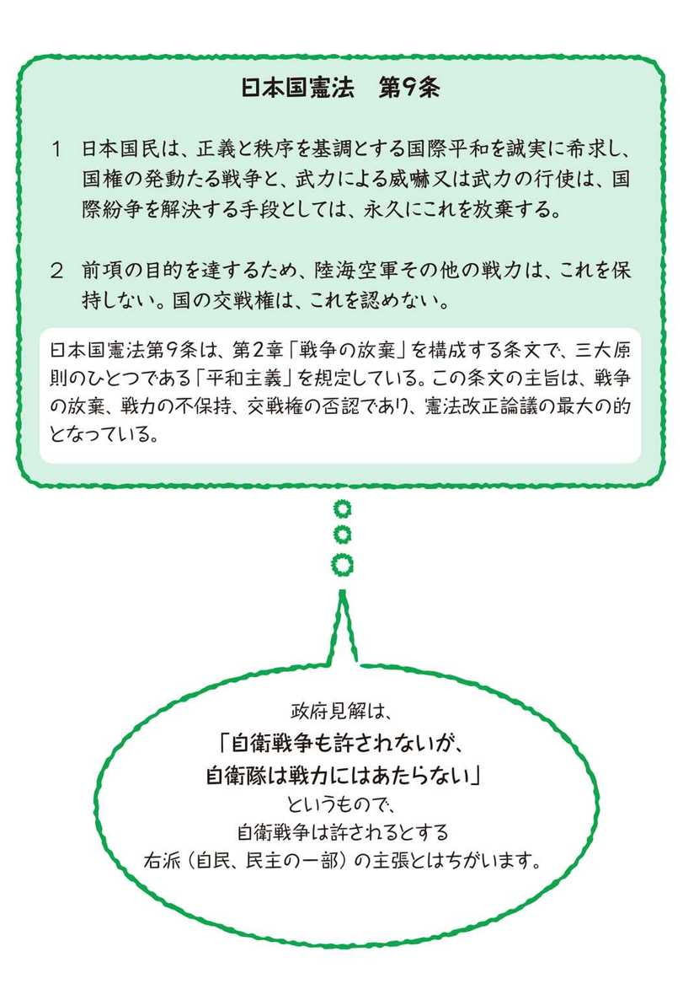
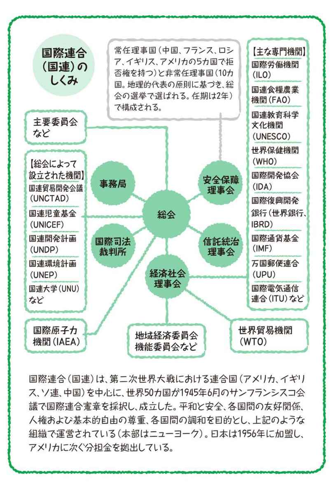
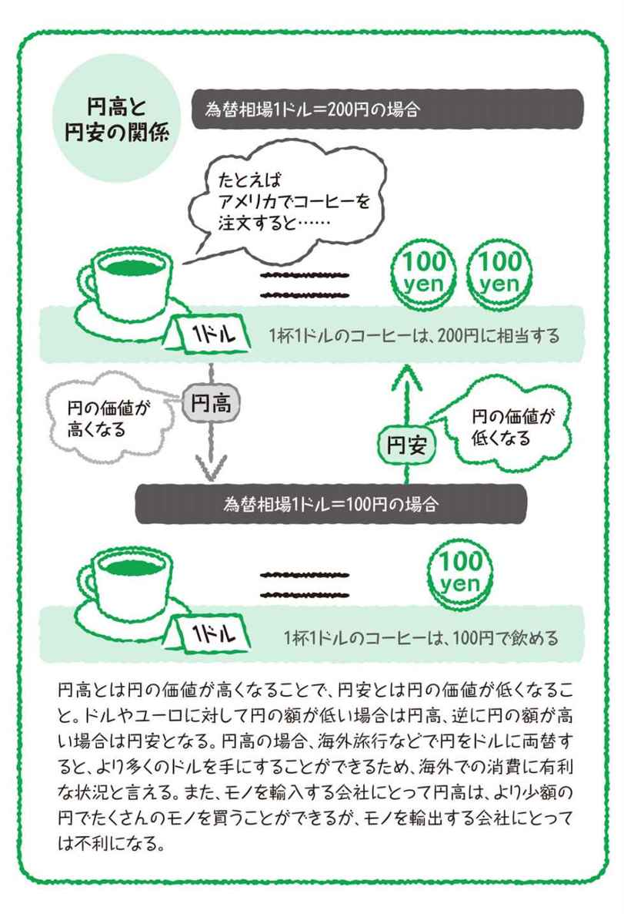

| おとなの楽習 (15) 公民のおさらい | |
| 土屋 彰久 | |
| (2016) | |
はじめに
一人称の教科
社会科の教科は、地理、歴史、公民に大きく分けられています。しかし、公民には他の二教科と大きく違う点があります。
地理も歴史も、誰が？いつ？どこで？というような、早い話が他人の話です。
一方で公民は、世の中のありようについて、とりとめのない話をだらだらとしているように見えるのですが、最終的には「私は何？」というところに行き着きます。
え？そんな話だったんですか？と思うのが、普通でしょう。
無理もありません。公民の先生の話なんて本当に他人事のように流れていきました。
でも、本当は他人事ではありません。公民は他でもない、あなたであり、私です。
そしてもう一つ、あなたや私、他の人々も皆含めた全体もまた公民です。
しかしその公民も、けっして単なる一つのかたまりではありません。
公民という教科が教えるのは、私たち一人ひとりが自立した一個の公民であるということ、そしてそうした公民が集まって、もう一つの公民が成り立っているということです。
私たちは誰に命令されるのでもない、誰に命令するのでもない、一人ひとりが自分自身で考え、行動し、互いに働きかけながらこの社会を動かす存在であるはずです。
そして同時に、私たちはその責任をきちんと自覚しておかなければなりません。そのことを学ぶのが、公民という教科本来の姿です。
さて、あなたは、私は何なんでしょう？
著者
もくじ
戦前から続く「公民」
今では、公民と言えば、まず基本的人権だ、国民主権だというのが通り相場です。それはそれで間違いではないんですが、そういう「公民」が始まったのは戦後になってからの話でした。たしかに、そのような公民を習った世代にとって、新憲法の申し子のような公民という科目は、戦後の民主化教育の象徴というイメージです。戦前の皇民化教育の象徴であった修身は、これのちょうど裏返しですね。ところが驚くなかれ、公民という科目は、戦前には修身と並んで皇民化教育の一翼を担っていました。それが一体、どうして修身は忌まわしき過去のものとされる一方で、公民は輝かしい未来を啓くものに出世したのでしょうか。
本当は「市民」だった
戦後の日本で公民のお手本となったのは、もちろんアメリカの公民教育ですが、アメリカでは、civic educationとか、citizenshipとか、「市民教育」と訳した方が自然な呼び方をしています。そして、現在の公民の内容を見ても、市民教育と言い換えて、全然おかしくはありません。
「公民」の三つの由来
歴史を紐解いてみると、はるか昔、大化の改新の頃に、公民という言葉が初めて出てきます。これは、当時の中国、すなわち唐の王土王民思想に倣ったもので、その日本版として、公地公民という言い方がされました。これは、民は国土と並んで、「公」すなわち天皇のものである（＝豪族のものではない）という意味です。
次に出てくるのが、明治以降で、公教育の整備が進む中、中等教育に取り入れられるようになりました。これは当初、社会に出る前に社会人としての一通りのことを学ぶことに主眼が置かれていました。その後、大正デモクラシーや男子普通選挙制の影響を受け、戦前ながら市民教育的な色彩を帯びた時期もありました。しかし、軍国主義化が進む中で、初等教育での修身の後を受けて、中等教育において皇民化教育の強化を図るものへと変質していきました。
最後が、戦後の新たな教育体制です。戦後の日本は、連合国（実質的にはアメリカ）の占領下で民主化が進められ、中でも民主政治の担い手たる市民を育てる教育は、その要と目されました。しかし、国民主権は実現したものの、戦前から「公」であった天皇も存続し、教育委員公選制も廃止されるなど、民主化は不徹底に終わりました。こうして、「市民を育てる教育」も幻に終わり、「公民」という入れ物だけが残りました。
敗戦で変わった「公」
今日では、戦後の「公」、すなわち「公共の公」のイメージが定着しています。これは、言い換えるなら「国民の共有財産」というような意味合いですが、それは国民主権が実現してはじめて意識されるようになったものでした。
日本の場合、「公」はそもそも権力の中枢（主権）を意味する言葉でした。ですから、戦前の場合は主権者の天皇が「公」であり、その一つ前の江戸時代には、将軍が「公」でした。滅私奉公の公は前者、公儀隠密の公は後者ですね。さらに江戸時代の将軍の場合、「公方」なんていう別称もあったくらいです。ただ、単に権力というだけではなく、そこには「天下」の意味合いも含まれていました。将軍を天下人と言ったり、天皇を天子と言ったりするのも、考え方は同じです。つまり、絶対的な権力者にとっても、権力は天からの預かりものであり、実態は別として、まったくの私物化が許されるわけでもないということです。
戦後の日本では、このような感覚を素地として、アメリカ型民主主義の強い影響の下、西洋型の「公」の考え方を取り入れ、今日のような「公」を形作りました。
西洋型の「公」イメージ
西洋型の「公」、すなわちpublicの起源は、ローマの共和制に遡ります。共和制のローマでは、自分たちの国のことをrespublica（レス・プブリカ：公共物）と呼んでいました。これは、共和国（republic）の直接の語源でもあります。ここに、日本や中国との大きな違いがあることがわかりますよね。西洋では、最初から「公」は共有を意味していたんです。対して、共和制の経験がなかった日本や中国では、権力は常に私有されていたので、長い間、国民に共有されることは、「公」の条件ではありませんでした。東洋では、私有が当たり前なので、「私物化されなければよし」でしたが、西洋では、「共有でなければだめ」でした。このような経緯を経て、国民主権とともに西洋型の発想が加わったことで、戦後の「公」は、「主権者たる国民の共有のもの」というイメージが定着していきました。
そして公民
こうして「公民」は、「市民」という言葉を避けて戦前から続く呼び名を残した政府の思惑を超えて、「民主政治の担い手」という、新生日本にふさわしい新たな意味合いを持つようになりました。参政権や投票権を意味する、「公民権」というような使い方も、その一つの表れと言えましょう。
世間では「市民」が一般的
普段から市民、市民と言われていますが、行政の単位でも「市」を用いてる日本では、かなり紛らわしい話になっています。日本では教育現場で「公民」という言葉が使われているので、学校にいるうちは、「市民は○○市の住民」という意識が身に付くのが普通です。しかし学校を卒業すると、とんと公民などという言葉は聞かなくなり、かわりに市民という言葉をやたらと聞くようになります。市民運動、市民集会など、これらみな「公民」と同じ意味合いで「市民」という言葉を使っています。
民主政治の主役
さて、それではその「市民」というのは、どんなものなのでしょう？ ズバリ、単刀直入に言いますと、「公益のために自治的な活動を行う人たち」というのが、今日、「市民」の意味するところだと言ってよいかと思います。ポイントは、公益と自治です。もちろん、公益は社会全体の利益ですので、本人の利益にもつながります。ですから、ここでの「公益のため」の意味合いは、「個人の利益だけを考えてではない」、あるいは、「個人の利益を社会の利益に優先させようとはしない」というような感じで捉えるとよいでしょう。自治は、「その社会の一員としてその社会の運営に関わる」というように考えてみて下さい。そして、それが本来の民主政治の姿と言えましょう。選挙に出かけて、適当な政党や候補者に投票して終わり、それは本来の姿ではありません。選挙で公職者を選んで立法や行政を任せるのは、わたしたちには他にもやらなければいけない仕事が数々あるためで、わたしたち自身も、できる範囲でさまざまな問題について考え、判断し、実行していくことが大事です。ですから、こうした「市民」としての意識、自覚を強く持っているならば、必ずしも活動にこだわることもないと言ってよいでしょう。民主政治の真の主役はこのような市民です。政治家や官僚はあくまで脇役であって、どれほど「国民的人気」を集めようとも民主政治の主役ではありません。
市民としての自覚
民主政治の健全さは、国民の意識の健全さによって保たれます。そして、その基礎となるのが市民としての自覚です。もちろん、精神の自由も非常に大事なことですので、そんなかったるい話はごめんだと思うのも個人の勝手です。しかし、それと引き替えに政治の健全さはそれだけ損なわれますから、最後には不利益として本人に跳ね返ってくることになります。
「市民」の起源は二つ
市民という言葉の起源は二つあり、いずれも民主政治と密接に関わっています。その一つは、古代ギリシャの都市国家の市民です。この時代は、古代の民主政治が栄えた時代でもあり、市民はその直接の担い手でした。もう一つは、近代の市民革命の時代の市民です。この時代には、市民は自ら革命を起こし、それまでの絶対王政を倒し、新たな民主政治の時代を開きました。もちろん「近代の市民」は、「古代の市民」を先例として大いに参考にしましたから、この二つはまるで別の物というわけではありません。
古代ギリシャの市民
古代ギリシャの国家は、都市国家に分類されます。都市国家は、都市を中心として、農地などの周辺地を支配地域に組み込んでいますが、はっきりとした国境はありません。これに対して、国同士が国境を接する今日のような国家は、領域国家に分類されます。都市国家の市民は、肉体労働は基本的に奴隷に任せ、中心の都市に集まって、政治、経済、文化、軍事など、さまざまな分野で活動していました。この時代の民主政治は直接民主制でしたので、市民の集会である「民会」がそのまま議会であり、政府の公職者を選ぶ際にも、投票の他に、抽選制や当番制なども用いられ、市民は誰でも公職に就く機会がありました。また、市民は同時に戦士でもありましたから、戦争は市民総出で戦うのが基本でした。
古代ローマの市民
古代ローマ、特に共和制ローマの政治制度は、現代の政治にも非常に大きな影響を与えているので、ギリシャと似ているようで違うローマの市民についても、見ておきましょう。ローマの政治は、元々、ギリシャ型の政治から発展したものなので、基本は共通しています。しかしローマでは、常に貴族の力が強く、貴族の集まる元老院が政治の実権を握っており、普通の市民である平民は添え物的な扱いでした。ただ、やはりローマでも市民は同時に戦士であったので、その戦士としての実力を背景に、発言力を強めていきました。これは「身分闘争」と呼ばれるローマ史の一コマですが、世界史的にも、「市民運動」や「民主化運動」の先駆けとも言えます。そうしてできあがったローマの共和制は、直接民主制の要素と代表制の要素を併せ持つものとなりました。またローマでは、貴族や富裕市民しか奴隷を持てなかったので、ギリシャと違って市民は自らも農業などの生産活動に従事していましたが、特権のおかげで経済的にもそこそこ余裕がありました。
中世・近世の市民
近代の市民は、中世の市民を基礎に発展したものです。中世には、商品経済の発展に伴い、ヨーロッパの各地に領主の居城などを中心として城壁都市の建設が進み、地域経済の中心、そして地域間の交易の拠点となりました。この城壁都市に集まってきた商工業者は、都市の規模、経済の規模が拡大するにしたがって、新たな社会階層を形成するようになりました。この層は、「城壁都市の住民」という意味でブルジョワと呼ばれるようになり、それがこの時代の「市民」となりました。この「ブルジョワ」という言葉は、今日では富裕層という意味に変わっていますが、それは語源がこのように「城壁都市の新興富裕平民」に由来するためです。
市民革命の主役
時代が進むにつれ、経済発展により近世の市民は大きな力を持つようになります。そして、そこからの行き先は二つに分かれました。一つは、政治の安定と特権の確保を優先して、絶対君主と手を結ぶ道です。この道に進んだ国では、当然、民主化が遅れることとなりました。そしてもう一つが、国王の支配を排して、自分たちが主権者となって政権を樹立する道で、これが市民革命です。近世の市民は、元々が商品経済の発展によって生まれた新興勢力でしたので、自身が戦士であった古代の市民のように始めから軍事力を持っていたわけではありませんでした。しかし商品経済の発展は、職業軍人であった騎士、下層貴族の没落をも招き、軍隊の主力は傭兵に移っていたため、市民の側もその経済力に物を言わせて軍隊を組織することが容易になっていました。
市民革命の後の市民
市民革命は、「市民が自由と平等を自らの手で勝ち取った戦い」と、一般に理解されていますが、それは話の半分でしかありません。市民革命は、主役であったブルジョワ市民にとっては、自分たちの経済的利益を守るための戦いというのが第一でした。政治的な自由も並んで強調されたのは、市民のそのような活動が、革命以前に国王側の弾圧に遭ったためでした。そして、平等を実現したとは言っても、それは身分制度を否定したにとどまり、最も重要であるはずの参政権に関しては、そもそも女性は排除されていた上に、経済力の条件が非常に厳しく設定されていました。ですから、自由と平等、国民主権を実現したとは言っても、実際に主権者として政治に参加することが認められた「市民」は、人口では数％に過ぎない、ごく一部の富裕層に限られていました。
参政権の拡大
市民革命後の体制は、民主化とは名ばかりのごく一部の富裕層が参政権を独占する状態にありました。たしかに、法の下の平等の原則の下、同じ法律がすべての国民に平等に適用されていましたが、その法律はそもそも参政権を持つ一握りの人々の意向に沿って決められたものでした。つまり、参政権を持たない人々は、自分たちに参政権を認めない法律を、選挙を通じて民主的に改正する道を最初から閉ざされていたということです。このような状況は、当然ながら国民の大多数を占める参政権を持たない人々の不満を招き、参政権の拡大を求める運動が広がりました。こうした政治的な対立の背景には、経済的な利害の対立もあったため、富裕層は中・低所得層に主導権を奪われることを警戒し、参政権の拡大はなかなか進みませんでした。
やはり戦争
参政権の拡大を後押ししたものはやはり戦争で、欧米では第一次世界大戦をきっかけに参政権の拡大が進みました。戦争になると、男は低所得者も兵士として出征し、女は男が戦争に出かけて減った分を埋め合わせる必要から、働き手として社会進出が進みます。こうして、目に見える形で国家への貢献を示すことで、低所得層や黒人、女性はその発言力を強め、参政権を勝ち取っていきました。また、民主化が遅れていた国々では、第二次世界大戦で連合国に敗れることで民主化が進むという展開になりました。これは、古代ギリシャで民主政治が確立し、その代表格であったアテネが、周辺の都市国家に民主政治を広めていった過程とよく似ています。
普通選挙の時代
第二次世界大戦が終わり、敗戦国が民主化され、さらに連合国の支配地域でも植民地が独立して新たな国々が生まれると、世界では普通選挙が標準となりました。普通選挙とは、元々は「経済的条件の課されない全員参加型の選挙」という意味で、制限選挙の対語でしたが、今日では経済条件だけでなく、人種、性別、身分といった一般に不合理とされる条件が課されないという意味で理解されています。ですから、年齢や国籍といった、今日でも合理的と考えられている条件は残っています。普通選挙制の採用によって、かつて国民の一割にも満たなかった有権者の数は大幅に増え、国民の大半が有権者、すなわち市民となりました。このような有権者の規模、構成の変化は、「少数の富裕層の政治」から「多数の中・低所得層の政治」へと、民主政治の性質を変化させました。
国民、市民、有権者
近世から近代にかけての市民は市民革命において、近代から現代にかけての市民は参政権拡大運動において、それぞれ、その市民としての資格を勝ち取るために戦いました。しかし、その成果として普通選挙制が実現してみると、有権者全体では市民としての意識は低いものでした。国民は誰でも有権者、すなわち市民になれるということで、逆に市民であることのありがたみが失われてしまったためでした。
大衆デモクラシーの定着
新たに有権者となった層の多くは、目先の損得にしか関心がなく、またメディアを使った誘導や煽動にも素直に反応するため、論を尽くしての説得よりも、感情に訴えての操作が政治手法として重要なものになりました。そして各国で、大衆操作に長けた政治家や政党が主導権を握るようになり、大衆に迎合しつつ大衆を利用する政治が一般化し、大衆デモクラシーと呼ばれるようになりました。こうして、激増した有権者は市民型と大衆型とに分化が進み、市民型の有権者は少数派になってしまいました。その結果、政治の表舞台でも私益追求型が幅を利かせるようになりました。
ニュー・ポリティクスと新しい可能性
有権者の拡大により、市民型の割合は大衆型に負けて低下するという皮肉な結果となりましたが、数そのものは市民型有権者も大幅に増え、社会に影響を与えられるだけの規模になっていました。こうした人々は、大衆デモクラシーで犠牲になりがちな分野で、既存の枠組にとらわれない新しい直接的な手法で、公益的な政策の実現を目指すようになりました。1960年代から活発化したこの種の政治運動は、一般にニュー・ポリティクスと呼ばれています。ニュー・ポリティクスは、平和、環境、女性解放などの新たな政治課題に対する新たな解決法の模索であると同時に、大衆化によって損なわれた政治の公益性を、主権者たる市民が自らの手で回復する運動でもありました。
市民運動の定着
ニュー・ポリティクスの成功は、議会や政党といった既存のチャンネルに頼らない自由な政治参加の可能性を示しました。そうして、意欲さえあれば誰でも一人の市民として社会に働きかけられるという理解が広がり、さまざまな市民運動に気軽に参加できる雰囲気が生まれました。現在では、市民運動はごく日常的なものとして社会に根付いています。
自由・平等・博愛
「自由・平等・博愛」は、フランス大革命の時に掲げられたスローガンで、三色旗に表されたその精神は、今日まで受け継がれてきました。人は本来、生まれながらにして自由で平等であるという考え方は、市民革命の支えとなった啓蒙思想の基本です。「博愛（fraternité）」は、「友愛」とも訳されますが、簡単に言えばみんな仲良くしようということです。革命前の旧体制を見てみると、国民の大半は身分制の下で政府の一方的な命令に従うほかはなく、また、身分に加えて地域や職業ごとに分断されて、それぞれの小さな集団の利益を守ることに汲々としていました。これらは、国王や教会、貴族といった一部の支配階級が多数の国民を支配するためのしくみであり、国民自身が主権者となり、力を合わせて自治を行おうとするならば、当然、克服されるべきものでした。
博愛の難しさ
ところが残念なことに、フランス大革命自体は、博愛とはほど遠い経過をたどりました。さらに、世界で民主化が進んだ後も、なかなか戦乱は収まらず、むしろ、感情に訴えて国民を手っ取り早くまとめられる点が戦争に都合がよいということで、民族主義の方が支持を集めました。また、国内でも自由な経済活動が可能になると、人々は協力よりも競争を志向するようになり、博愛の精神は忘れ去られてしまいました。しかし、人々の協力によって成り立つ市民社会は、博愛の精神を欠いて存続しうるものではありません。
人道主義と人権保障
現代では、すでに人権は誰でも生まれながらにして平等に持つものとの理解が定着しています。しかし、実際に個人の人権が守られるためには、社会に人権尊重の文化が定着していなければなりません。一人一人ではか弱い存在である個人が、自分たちの人権を守っていくためには、お互いに守りあうことが必要です。自分がいざという時に助けてもらうためには、自分に余裕がある時には、困っている人を助ける。お互いに困っているときには力を合わせて難局に対処する。こうした助け合いの精神で、人権尊重の文化を定着させていこうというのが、人道主義の基本です。今晩の食事にも困っているような人に、「社会の迷惑だから犯罪はするな」と言っても、説得力はありません。このような観点から、市民革命の頃は自由権だけに限られていた人権も、今日では生存権などの社会権、さらには環境権などの新しい人権にも拡大され、「人間たるに値する生活」の総合的な充実が進んでいます。
平等の意義
人々は、市民たる資格において平等である。市民社会における平等の元々の意義は、ここにあります。身分制が過去の物となった今日でも、世の中にはさまざまな上下関係があふれています。しかし、市民として集う時、そこには上下関係はありません。逆に言えば、そのような場にも上下関係を持ち込みたがる人は、市民社会には向いていないということです。
法の下の平等
人は生まれながらにして平等であるという理念を、市民革命期に最初に制度化したものが法の下の平等でした。これは、すべての人が同じ法の制約と保護を受けるというもので、身分ごとに法律も異なっていた旧体制から比べれば、大きな変化でした。しかし、当時は同じ法が平等に適用されればよいとされ、法律の内容そのものの不平等は問題にされませんでした。市民革命後も、参政権が一部の人々に限定されていたのはそのためです。しかしその後、そのような形式的な考え方は改められ、今日では法律の内容そのものが平等であることが憲法において保障されています。
形式的平等
平等の原則は、市民革命の成果として広く国民に受け入れられましたが、その平等の中身に関しては、法の下の平等が実質化された後も、「機会の平等」さえ確保されればよいという形式的な平等観が支配的でした。しかし、形式的平等の強調は、現実にある実質的不平等の正当化にストレートにつながるものであり、そうした理解が広がるにつれ、修正が迫られるようになりました。つまり、形式的には不平等な扱いでも、実質的な平等を目指すような場合は認められるということです。ただし今日でも、実質的平等はもちろん形式的平等にすら反するような、あからさまな不平等は当然認められません。そうした意味では、平等原則の最低線としての形式的平等の重要性は変わっていないと言えます。
実質的平等
市民革命を契機に進んだ経済活動の自由化は、結果的に貧富の格差の拡大をもたらし、制約のない自由競争は多くの人々の犠牲の上に一部の人々の利益を実現するものだということがわかりました。そうなると、そのような社会は多くの人々の支持を失い、崩壊に向かってしまいます。こうした問題意識の下で、「結果の平等」にも配慮する実質的な平等観が台頭し、形式的平等とバランスがとられるようになりました。
社会を維持する力
どのような社会にも、それを維持する力と崩壊させる力が働いており、維持する力が衰えてくれば、社会は崩壊に向かうことになります。社会を維持する力は、社会のタイプによって変わってもきますが、市民社会を維持できるのは、市民自身の力のみです。表面的な治安などは、強力な警察力などで守ることはできますが、そのような社会はすでに市民社会としての内実は失ったものであり、別のタイプの社会に変質したものと言えます。
社会を守る主役である市民をその気にさせるには、二つのポイントが重要です。一つは、その社会が市民の共有財産として理解されていること。もう一つは、市民一人一人が、その社会の受益者であるという感覚を持っていることです。いずれのポイントも、個人と社会の利害が一致しているという点は同じです。逆に言えば、本来の健全な市民社会は、個人に対して不当な犠牲を強いるようなものではないということです。そのような不健全な状態に陥っているとしたら、それを正すのが市民の責務ですし、それを果たせなければ、社会は崩壊や変質を避けられません。
公共性とは？
社会、そして国家が市民の共有財産であること、それが公共性の意味するところです。「公共の場所で（そういうことをするな）」などとよく言われる一方で、はっきりと意識されることは少ないのですが、その根本的な意義は、「誰のものでもなく、みんなのものである」というところにあります。「誰のものでもない」と、私物化を否定しつつ、一方で「みんなのものである」と、共有性を強調しているのがポイントです。これは、誰が社会や国家の一部を私物化しようとしても、そのような動きに対して、誰でも共有者の一人として対抗できるということを意味します。そしてこの感覚が、市民一人一人による社会の維持の原点となります。
公正の大切さ
社会や国家がきちんと機能すれば、その恩恵はすべての人々に及びます。しかし、それがうまくいかないと、一部の人は得をし、一部の人は損をするような状況が生まれます。そうなってしまうと、損をしている人々の間では社会を守る意欲が失われてしまいますし、そのような人々が増えれば、社会は維持できなくなってしまいます。格差の拡大も、その典型の一つです。こうした事態を避けるために、社会の運営が日頃から公正に行われることが重要です。
明治憲法
明治維新を機に近代国家としての歩みを始めた日本が最初に制定した憲法は、大日本帝国憲法、いわゆる明治憲法でした。明治憲法はアジアでも初の近代憲法でしたが、主権者とされた天皇の権限が強大な一方で、国民の権利や国民の代表の権限は弱く、民主化が進んでいた世界の流れから見ると、むしろ内容的には後進的なものでした。さらに明治以降の政府は、政府への求心力を高めるために、明治憲法が前提とした神権天皇制の思想を国民に浸透させる皇民化教育を徹底しました。そのため、内容的には先進的な部分も含まれていた明治憲法は、国民に植え付けた神権天皇制の思想に引きずられる形で、実態は国民管理の根本法規へと変質してしまいました。そうして、世界に帝国主義の波が広がる中で、このような精神風土は軍部の台頭を許すことになり、日本の立憲政治は形骸化してしまいました。
敗戦と憲法改正
結局、明治憲法は日本の軍国主義化に拍車をかけることはあっても、歯止めとなることはありませんでした。そして日本は、戦線を際限なく拡大していった挙げ句に第二次世界大戦に敗れ、旧体制は崩壊するに至りました。日本は敗戦に際し、連合国側が提示したポツダム宣言を受け入れ無条件降伏しましたが、このポツダム宣言には、憲法改正を含む徹底した民主化の要求が盛り込まれていました。こうして、日本は敗戦を機に、ポツダム宣言に基づいて新たな民主的な憲法を制定することになりました。
松本草案とマッカーサー草案
日本政府は、まず自主的な改正草案、いわゆる松本草案を作成しました。しかし、その内容は明治憲法に手直しをした程度のものにとどまり、連合国の了承が得られるようなものではありませんでした。そこで、戦後処理にあたっていた連合国軍総司令部（ＧＨＱ）のマッカーサー司令官は、ＧＨＱの民政局に指示して草案を作り直し、日本側に提示しました。これがいわゆるマッカーサー草案です。
新憲法の制定
日本政府は、マッカーサー草案の内容に衝撃を受けつつも、天皇制を維持することを最優先してこれを受け入れ、マッカーサー草案を土台として改正案の作成が進められました。そして、国民主権と人権保障、さらに戦争放棄と象徴天皇制が盛り込まれた新憲法が制定（1946年11月3日公布）されました。
「押しつけ憲法」論
日本国憲法の原案にあたるマッカーサー草案は、日本政府の自主的な起草によるものではありません。また、憲法の制定も旧憲法の改正手続に則って行われ、戦後に新たに招集された新国会の議決は経たものの、国民投票は行われませんでした。このように特異な経過をたどったことから、現行憲法はアメリカに押しつけられたものだという主張が、保守勢力を中心に根強くあります。戦後、この憲法の下でほぼ政権を独占してきた自民党も、綱領では憲法改正を謳っています。これに対して、一般国民の間では制定当初から支持の声が優勢であり、すでに国民の共有財産として承認されているという反論が有力です。さらに手続面で見ると、ポツダム宣言の内容から考えれば、徹底した民主化は避けられませんでした。改正が間に合わずに時間切れになれば、昭和天皇は戦犯として裁かれ、天皇制も廃止されるだけであって、国民投票で否決されたとしても、その点は同じであったろうと見られています。むしろこの決着は、天皇を象徴として残し、かつ昭和天皇の戦犯訴追も避けられた点で「現実に可能な限りで最も不徹底な民主化」であったという逆説的な解釈もあります。
アメリカとＧＨＱ
第二次大戦を日本では対米戦争の太平洋戦争と呼ぶことが多いように、連合国側の勝利はアメリカの貢献によるところが大でした。そのため、連合国は連合国の名の下でアメリカが日本の占領政策を通じて戦利を得ることを黙認し、日本の戦後処理を実質的にアメリカに委ねました。そこでアメリカは、戦利確保のために日本の円滑な属国化を最優先し、連合国が求める民主化の要求と、日本政府が求める体制の維持のバランスを取る方向に動きました。戦利を実質的に放棄した他の連合国が、日本に徹底した民主化を求めたのは、再び戦争を起こさない環境を整えるためでした。また、日本政府が旧体制から続く支配構造の温存や、その鍵となる天皇制の存続、昭和天皇の助命にこだわった背景には、その二つのシナリオが崩れてしまっては、アメリカの間接統治に協力したくてもできなくなるぞという、捨てばちの強みもありました。
切り離せない戦争放棄と象徴天皇制
こうした三者三様の都合の上に成立した唯一の均衡点が、連合国の不戦の要求に応え、日本政府の天皇制存続の嘆願に応え、アメリカが支配国としての実利を確保する戦争放棄と象徴天皇制の組み合わせでした。ですからこの決着を拒否して、「押しつけ憲法」を返上したいのなら、ポツダム宣言破棄、いざ本土決戦！となります。
幸運な偶然
日本国憲法は、制定から半世紀を過ぎた今日でも、普遍性と先進性において際立っていますが、制定当時はまさに世界の最先端でした。そして、実質的には米軍と日本の旧支配勢力の合作であったにもかかわらず、内容的には国民の権利保護に非常に手厚いものでした。それは、幸運な偶然が重なっての結果でした。当時、中国ではすでに、日本の敗色が濃厚となった大戦末期から国共内戦が再開していたように、米ソは戦後の覇権争いを睨んだつばぜり合いを始めていました。アメリカ本土は、ソ連に対する警戒感を強めて冷戦モードに入っており、レッドパージ（社会主義同調者の公職追放）が進んでいました。そのため、アメリカ本土で職場を得にくくなった進歩的な若手が、ＧＨＱ民政局にも多く集まることになりました。そこに憲法草案作成の仕事が持ち込まれましたが、実質８日で仕上げたと言われる強行日程のために、どさくさに紛れるように現場の若手が当時の理想をどんどん盛り込んでいきました。こうして出来上がった草案の中身は、米軍や日本政府よりも、蚊帳の外に置かれた一般国民の利益を厚く保護するものとなり、戦後の民主化の拠り所となりました。
際立った先進性
当時の民主主義憲法の最先端となった日本国憲法には、世界の憲法史上初となるような歴史的な規定がいくつか盛り込まれました。戦争放棄・戦力不保持を謳った９条、象徴君主制、もしくは在君民主制を明定した１条、生存権の保障を実質化した25条、違憲審査制度を明定した81条などが、それに当たります。９条は最も有名ですが、戦争放棄の原則は、侵略戦争に限定する国が多いものの、世界に広がってきている一方で、戦力不保持の原則に関しては、日本自身がそれに反して自衛隊を設置するなど、まだまだ理想の実現には程遠い状況にあります。一方、日本が初めて採用した国民主権と君主の組み合わせは、国家体制としては在君民主制（民主君主制）、君主の地位としては象徴君主制となります。このスタイルは、戦後も王室を維持する道を選んだヨーロッパ諸国の多くで採用され、日本はまさに先駆けとなりました。違憲審査制度は、アメリカでは判例の積み重ねによって定着していましたが、憲法上、権限が明記されたのは実質的に日本が初めてで、やはり戦後の立憲民主主義の根幹を支える制度として世界に広がっていきました。生存権は、その保障を最初に謳ったのは戦前のドイツのヴァイマル憲法でしたが、当時は努力目標という位置づけであり、国民に生存権を実質的に保障する体制は、戦後の世界で確立されました。

国民主権と「憲法の主語」
「憲法の主語」すなわち憲法の書き出しには、その憲法を通底する思想が端的に表れます。ところがわが憲法、なんと「天皇は」で始まっています。旧憲法ですら、「大日本帝国は」で始まっていたのに。主権者である国民は、同じ１条とはいえ、まるでとってつけたように不自然に言及されているだけです。実際、日本政府はその効果、つまり天皇制の存続を冒頭で印象づけることを狙っていました。でもご安心下さい。実は日本国憲法は１条からではなく、前文から始まっています。前文に目をやると、「日本国民は」と最初から主役が登場し、この憲法を制定した主権者として、さまざまな根本理念や原理を高らかに宣明していることがわかります。一方、前文には天皇についての言及はありません。前文と１条、あるいは１章（天皇の章）を見くらべてみると、連合国に対しては、先進的で民主的な憲法であることをアピールしつつ、国内向けには旧体制との継続性を強く印象づけようと、当時の政府が腐心した様子が伺えます。前文はあまり読みやすい文章ではありませんが、よく読んでみれば、この国の主人公が国民であることがよくわかります。
平和主義
日本国憲法は９条において、戦争の放棄にとどまらず戦力の不保持まで定めています。この徹底した平和主義の姿勢には、戦前の軍国主義体制の下で進められた侵略戦争の拡大が、周辺諸国にも自国にも甚大な被害をもたらしたことへの反省が込められています。制定時の政府やアメリカの本音は、天皇制存続が確保できた段階で、いずれ頃合いを見て改正すればよいというあたりにありました。しかし、長年にわたる戦争に疲れ果てていた国民は、「もう二度と戦争をさせられることはない」と約束してくれた９条を額面通りに受け取り、大歓迎しました。９条に込められた平和への思いは、「押しつけ」たつもりの政府やアメリカの思惑を離れ、わたしたち国民自身が選び取ったものとして、再確認されたのでした。
人権の保障
日本国憲法は、国民同士の約束であり、そこにはこの国の運営を通じて果たそうとする目的、そしてそのための手段が明記されています。そして、その唯一至高の目的が人権の保障です。憲法が定めるさまざまな制度は、すべて、その目的をよりよく果たすためのものでしかありません。まず国民がいて、その人権を守るために国家がある。この順位が逆転して国家が上になったりすると、人権も有名無実となってしまいます。
自由権
自由権は、「～の自由」の他、「～の権利」という表現もされ、法の下の平等も広い意味では自由権に含まれます。自由権の内容は、他者から不当な干渉を受けないことです。よく、国家の干渉だけが禁じられているかのように勘違いしている場合がありますが、個人が他人の自由権を侵害することは、そもそも憲法以前の段階で法律によって禁止されています（たとえば刑法の強要罪など）。自由権を憲法で保護する意義は、国家が法律を定めたとしても、つまり形式的には合法であっても、侵害が許されないという点にあります。このように、国家による侵害からの保護を中心に自由権の考え方ができあがったのは、18世紀の市民革命に至る過程で、革命勢力が旧政府側からさまざまな理不尽な弾圧を受けたためでした。そのようなわけで、自由権は国家がなければ侵害もあり得ないという意味で、前国家的権利、消極的権利、18世紀的権利などと言われます。しかし、国家と法律による保護がないと、今度は個人による侵害が野放しになってしまいます。ですから、すでに民主政治が確立している今日では、自由権の保護についても国家の関与が必要と考えられています。
社会権
社会権は、第一次大戦後のドイツ・ヴァイマル憲法で、初めて生存権と財産権の社会的制約が規定されて以降、第二次大戦後に先進諸国で進んだ福祉国家化の流れのなかで、それまでの自由権とは異なるタイプの人権として確立しました。社会権は、国家の積極的な援助によって保護される性質のものなので、自由権との対比で後国家的権利、積極的権利、20世紀的権利などと言われています。日本では、「健康で文化的な最低限度の生活を営む権利（25条）」と表現される生存権、そして教育を受ける権利（26条）として具体的に規定されています。また、経済活動の自由に絶対的な保護を与えたことが、貧富の格差を拡大し、多くの人々に過酷な生活を強いることになった反省から、財産権には社会的規制が課せられ、労働者自身にも労働条件の改善につながる権利を認めています（28条）。
参政権
参政権は、本来は主権者としての権利なので、細かく言うと性格が違います。しかし、国民が自らの手で人権を守る上で、参政権が非常に重要な権利であることは、歴史が示す通りです。そこで憲法は、人権を守るための手段である参政権について、広い意味での基本的人権に含め保護を図りました。
「公共の福祉」って何？
憲法は、人権保障を至高の目的として掲げる一方で、人権は公共の福祉の制約を受けると、いくつもの条文で繰り返し強調しています。人権こそ至高のはずなのに、それに勝るとは、「公共の福祉」こそが究極の国家目的だということなのでしょうか？ 戦後しばらくは、そのように解されていた時期もありました。そして、その頃は「公共の福祉」の意味するところも、ほとんど字面の通りに公益の言い換え程度に理解されていました。しかしそれでは、違憲立法審査権まで定めて人権を国家権力から守ろうとした意味がありません。なぜなら、通常、法律は公益のために制定されるので、公益が人権に優越するというのは、法律が人権に優越するのと結果的に同じことになってしまうからです。これでは、戦前の悪名高き「法律の留保」と中身はまったく同じです。そこで憲法学者たちは考えました、というより憲法学者の大半は最初からきちんとその点を考えており、最高裁の頭が戦前モードだったんですね。
人権は至高だが、一人が人権を100％振り回すと、回りの人の人権が侵害されかねません。そこで、至高である人権と人権との間で調整が必要になるというわけです。憲法もしつこく言っています。「国民は人権を濫用してはならないのであって、常に公共の福祉のためにこれを利用する責任を負ふ」（12条）と。まあこの後段も「常に」とか言っていて、字面でとると余りに窮屈なので、あくまで権利の濫用の戒めとして割り引いて理解して下さい。今日では、このように「公共の福祉」というのは、他者の人権の総体を実質的に表すものとして理解されています。
「法律の留保」と濫用好きの日本人
憲法がこれほど公共の福祉にこだわったのには、それなりの理由があります。旧憲法にも人権規定はありましたが、法律によれば自由に制限することができました。これが「法律の留保」です。しかし法律の留保というのは、本来のヨーロッパの考え方では、人権を制限するには、国王が勝手に発する勅令ではなく、国民の同意を条件とする法律が必要であるという意味でした。つまり、本家では人権を守るための制度だった法律の留保が、日本では旧憲法の字面のお墨付きがもらえたということで、人権の制限に濫用されてしまったのです。お墨付きさえあれば平気で人権を踏みにじる、それが日本人の困ったところです。となると、下手に個々の人権を強調すると、それがまたお墨付きになりかねません。そこで、濫用禁止、公共の福祉と強調したんですが、その「公共の福祉」を最高裁が濫用して人権を制限するというオチがついてしまいました。
精神的自由
精神的自由は、思想・良心の自由（19条）と信教の自由（20条）に大別することができます。全国民に天皇崇拝が強制されていた戦前の日本は、精神的自由のない国の典型でしたが、そのような環境の下で培われた精神的自由を軽視する風土は、今日でも根強く残っています。東京都などで深刻化する日の丸・君が代強制問題は、その一つの表れと言えましょう。精神的自由は、内心で何を考えようと絶対的に自由であるということに加え、内心の表明を強制されない自由、さらに精神的苦痛を感じる行為を強制されない自由まで含むものです。しかし実際には、相手の立場の弱さにつけ込んで、内心に立ち入る質問をしたり、屈辱的な行為を命じたりすることが気軽に行われています。一方、信教の自由は宗教的行為の自由も当然含みますが、これは公共の福祉の制約により、基本的には回りに迷惑をかけないレベルにとどめられます。
表現の自由
ある種、メジャーというか花形というか、人権の中でも真っ先に思いつきそうなのが、この表現の自由です。それには、私たちが日頃から接しているメディアが、何よりもこの自由の恩恵を受けているために、ことある毎にこの自由を強調しているという事情もあります。ただやはり、それ以前にまず表現行為というのは、人間の精神活動そのものであり、また同時に、人間社会を成り立たせる上で不可欠なコミュニケーションの手段であるというところを踏まえておくことが大事です。もちろん、表現行為は他人に働きかける行為ですから、他人に迷惑をかける可能性も大きいですし、そのような行為は「公共の福祉」に基づいて制限されます。しかし「自由にものが言える雰囲気」というのは、健全な社会に欠くことのできないものですので、表現行為の制限は、常に必要最小限の範囲で慎重に行われなければなりません。
生命・身体・行動の自由
私たちが自由を感じるのは、自由に考えたり発言したりしている時より、むしろ自由に行動している時ではないでしょうか。ところが意外なことに、憲法には行動の自由について直接の規定がなく、刑罰関係の規定（31～40条）や幸福追求の自由（13条）などが、間接的な根拠と見なされています。しかし、生命・身体・行動の自由など、本来は憲法に書くまでもない当たり前の話です。それが当たり前と思えず、明文の根拠がないと安心できないのもまた、理不尽な戦争に否応なく動員された戦前のトラウマの影響と言えましょう。
権力を制限する必要性
長い歴史の中で、多くの犠牲を払って私たちが学んだのは、権力そのものの危険性です。イギリスの政治家アクトン卿の有名な言葉に、「権力は腐敗する。絶対的な権力は絶対的に腐敗する。」というのがあります。権力を握った人たちが暴走しがちなこと自体は、君主制であれ民主制であれ大差ありません。今日ではこうした教訓に基づき、権力を制限するためのさまざまな制度が取り入れられています。そして、その基本的な枠組を憲法で定めるのが、立憲政治の基本的な考え方です。日本国憲法は、まずすべての国家機関に共通するものとして、国家の目的（人権保障）と、それを損なうような行動の制限（不当な人権侵害の禁止）を一般的に定めています。しかし、道路標識に書かれた制限速度があまり守られないのと同じで、単にダメと言えば済むものでもありません。そこで、各国家機関に個別の権限を与える段階から、その役割と限界をはっきりと示し、勝手な暴走の歯止めとしています。
権力分立の発想
ケーキを切り分ける時は、切る人と分ける人を別にしましょう、なんて話がありますね。権力の分立もそれと同じで、一所に集中させること自体が危険なのだから、全体の効率を無意味に損ねることがない範囲で、権力は最初からなるべく分けましょうということになっています。中でもメジャーなのは、法律の制定（立法権）、執行（行政権）、判断（司法権）を、議会、政府、裁判所にそれぞれ分ける三権分立ですが、議会の中での二院制や中央政府と地方自治体の関係も、権力分立の具体例の一つです。
抑制と均衡のメカニズム
権力の濫用を相互に牽制する作用自体は、権力をそれぞれの機関に分けるだけで、多かれ少なかれ働きます。しかし、強力な権力には、それだけ強力なブレーキも用意しなければということで、国家運営の根幹に関わる三権分立に関しては、特に入念な制度設計がされました。それがいわゆる「抑制と均衡」と呼ばれるシステムで、基本的な考え方は市民革命の時代にロック、モンテスキューによって示されました。具体的には日本の場合、議会は首相の指名権、内閣不信任決議権と裁判官の弾劾裁判権を持ち、内閣は議会（衆議院）の解散権と最高裁判事の指・任命権を持ち、裁判所は議会の立法や内閣の行政に対する違憲審査権を持っています。これらの権能が、期待されたような活用のされ方をしてきたかどうかは、また別のところで触れたいと思います。
「法治主義」今昔
近代国家の条件の一つは、法治国家体制の確立です。日本では明治の近代国家建設の際に、憲法、民法、刑法といった主要な法律が制定され、法治国家体制が整いました。しかし、西洋型の法治主義の素地がまるでなかったため、法律に定めさえすれば何をやってもよいというような、政府に都合のよい形式的な理解が定着してしまいました。しかし法治主義のそもそもの意義は、人治主義の否定、つまり支配者が勝手気ままに権力を振るうことの排除にあります。ですから、法律を好き勝手に定めるような権力の横暴は、法治主義の精神にも反するものでした。日本国憲法がその考え方を根本から否定したこともあり、今日では法治主義も本来の理念に沿って理解されています。
「法の支配」と「司法の優越」
かつての形式的な「法治主義」と対比して説明されるのが、「法の支配」です。「法の支配」というのは、国家には、権力を独占する支配者ですら改廃できない一段上のクラスの法（その典型が憲法）が存在し、王もそれに背くことはできないという考え方です。この理念は、イギリスで確立された後アメリカに伝わり、その後アメリカで確立された違憲審査制の広がりにより、世界で広く採用されるに至りました。今日では、「法治国家体制」と言った場合には、この法の支配も法治主義と並んで確立しているものとして理解されています。法の支配を守るためには、司法、つまり裁判所に政府や議会に勝る権威が認められていなければなりません。これを「司法の優越」と言います。司法の優越は、一見、三権分立のバランスを崩しそうにも見えますが、裁判所はあくまで憲法に忠実であることが大前提ですし、元々が自分から動くことのない受け身の国家機関ですので、実際には優越を認めるくらいでちょうどよくなります。
違憲審査制度
違憲審査制度は、アメリカから始まり、戦後、世界に広がった新しい制度ですが、現在では立憲民主主義において必須の制度と理解されています。憲法にこの規定を置いたのは、日本が世界初ですが、日本の最高裁は憲法判断について非常に消極的で、違憲判決は戦後の長い歴史で数えるほどしかありません。違憲審査権は、地裁などの下級裁判所も同じように有し、若手の裁判官が多い地裁では、最高裁の意向など気にせず、違憲判決が下されることも意外とあります。しかし、出世を気にする裁判官が多い高裁では、逆に最高裁より少なくなっています。
立憲政治の要
憲法の章立ては、立法府（国会）、行政府（内閣）、司法府（裁判所）と並んでいます。これは、法律が〈作られ→執行され→判断される〉という、法治国家の元々のあり方の順になっています。しかし日本国憲法は、その流れとは違った制度を作りました。それが違憲審査制度です。それまでは、国会が作った法律を適用しているだけでよかった裁判所ですが、この制度の下では、憲法に違反した国会や内閣に憲法を守らせるという大役を裁判所が担います。立憲民主主義の理念は、国民の一時の気まぐれが取り返しのつかない事態を招かないように、誰が選挙に勝っても越えてはいけない一線というのを引き、いつでもやり直しが利くようにしておこう、というところにあります。そしてさまざまな場面におけるこの「一線」が、一つ一つの条文として憲法に記されているわけです。ですから裁判所は、選挙に勝った勢いでこの一線を越えようと突進してくる国会や政府を押しとどめ、線の内側まで押し戻さなければなりません。裁判所がこの役目を果たせなければ、政治は取り返しのつかないところまで転がっていってしまい、人権保障も絵に描いた餅で終わってしまいます。
憲法の番人か権力の番犬か
すべての国家機関に憲法をきちんと守らせるのは、すべての裁判所の仕事ですが、その最後の砦である最高裁判所は、「憲法の番人」とも呼ばれています。しかし一方で、「権力の番犬」、あるいは「最低裁判所」と呼ぶ人たちも少なからずいます。それは、憲法違反が疑われる多くの事件で、最高裁は度々、下級審における違憲判決を覆して、政府に有利な合憲判決を下してきたためです。実際、違憲審査制度を持つ先進国の中でも、日本の違憲判決の少なさは突出しています。しかし、最高裁ばかりを責めることもできません。なぜなら、裁判所が憲法を守るべく、時の国会の多数派と対峙しようという時、頼りになるものは憲法の条文などではなく、国民の支持こそが最終的な拠り所となるからです。最高裁が横暴な政府を押しとどめている間に、次の選挙で政権交代を起こす、あるいは政府べったりの最高裁判事は国民審査でクビにする、それができないと、最高裁も憲法を守れません。
司法の独立
裁判官は、法治国家、立憲政治の要として、不当な圧力を受けずに公正な判断が下せるよう、高度な独立性と身分保障が規定されています。しかし政権が変わらなければ、同じ政党の内閣が任命を続けるので、独立も名ばかりとなります。
三審制
日本では、大抵の裁判について、基本的に三回まで争うことが可能です。また、三回目で負けたら完全に終わりというわけではなく、一定の事情があれば再審も認められており、冤罪事件の多くは、一度有罪判決が確定した後に、この再審によって救われました。こうした制度は、人間が人間を裁く限り、どれほど最善を尽くしたとしても誤りはありうるという考えに基づいており、ほとんどの国が採用しています。
刑事裁判の変質
元々、現代型の刑事裁判では、国家が課す公的な刑罰を被害者の報復と切り離して考えるのが基本でした。なぜならば、刑事司法の目的は新たな犯罪を予防することにあり、過去に起こった犯罪を罰することは、そのための手段にとどまるべきものと考えられてきたからです。しかし犯罪の検挙率が低迷し、期待されたような予防の目的を果たせない状況が長く続いてきたこともあってか、厳罰化、被害者参加、裁判員制度など、処罰そのものに目的が移ったかのような制度の変更が続いています。
裁判員制度の導入
先進国では、陪審制（英米型）、参審制（ヨーロッパ型）といった形で国民の裁判参加の制度化が進んでいます。こうした流れを受け、日本でも刑事裁判の中でも重大な犯罪に限定して、裁判員制度が導入されました。しかし、一方的に呼びつけられ、被害者の体の一部など、見たくもないような凶悪犯罪の証拠を見せられ、さらに守秘義務を一生背負わされるのに、わずかな日当が与えられるだけで、その負担は、非常に軽く見られています。裁判員に集中するこのような過剰な負担には、批判が集まっています。また、裁判員裁判は一審に限定されるので、控訴されればそんな苦労もまったくの水の泡となります。
改革が進む民事裁判
日本では、費用や時間の問題からデメリットがあまりに大きいため、民事裁判が長い間敬遠されてきたという事情がありました。最近では、民事裁判を利用しやすくするための改革が行われ、少額訴訟や本人訴訟がやりやすくなり、また以前は認められなかった弁護士費用の請求も、必要な限りで認められるようになってきています。ただそれでも、消費者金融や貧困ビジネスなど、ノウハウを生かして裁判を多用する業者に有利な状況は基本的に変わりません。そこで、知識も資金もない一般市民を支援するため、公的な法律相談窓口として法テラス（日本司法支援センター）が設立されました。
議院内閣制の基本ルール
日本国憲法では、行政権は内閣に属するとされ（65条）、内閣を主催する総理大臣は国会議員から選ばれ（67条）、内閣を構成する国務大臣は、過半数は国会議員である必要があります。そして、内閣は国会に対して連帯して責任を負います（66条）。一方衆議院は、不信任決議により内閣を総辞職させる権限を持っています。この不信任決議に対して、内閣は衆議院の解散（69条）で対抗することができますが、新国会の招集後には総辞職しなければならないので、時期は遅れますが総辞職そのものは避けられません。
全員一致と大臣の任免権
内閣は国務大臣によって構成される合議体で、その意思決定は全員一致で行われます。国務大臣というのは、内閣を構成する閣僚のことを意味するので、必ずしも○○大臣という耳慣れた職名がついているわけではありません。たとえば、○○省の○○大臣というのは典型的な大臣ですが、省以外の庁などの組織の長は○○庁長官という名の大臣ですし、逆に下に特定の組織がなくても、特定の政策目的を掲げた特命大臣として～担当大臣といった肩書きになることもあります。
内閣は他の国家機関との関係では、一個の意思を持った一つの機関であり、その意思は全員一致で決めなければならないので、その点では全閣僚は完全に平等です。
しかし一方で、総理大臣は大臣を自由に選び、また罷免する権限を有していますので、意見の一致しない人は大臣にしない、あるいは大臣になった後でも辞めさせることができます。こうして、全会一致の組織でありながら、同時に総理のリーダーシップの下に置かれるという図式になります。
行政機構のなりたち
政府の下には、実際の行政を執り行う部門として、巨大な行政機構があります。行政機構の構成としては、大統領が替わるたびに上級公務員が大幅に入れ替わるアメリカ型（スポイルズ・システム）と、多くの国で採用されている試験による職能採用型（メリット・システム）とがあります。日本では、採用時の資格に関係なしに政府が任命できるのは、大臣、副大臣、政務官などトップの一握りだけで、各省庁の人員は基本的に上から下まで試験採用の一般公務員が占めます。そして、基本的には退職まで同じ省庁で仕事を続けます。そのため、各省庁は知識や経験を生かして高度な専門性を維持できますが、その反面、政府が任命する大臣などは能力不足で、官僚機構をコントロールできないことが多いと言われています。
広がる行政の範囲
「行政」と一口に言われても、なかなかピンとこないですよね。それも無理はありません。行政は元々つかみどころのないもので、一般的には国や自治体が行っているすべての仕事から、議会（立法府）と裁判所（司法府）の仕事を除いたものが行政だと考えられています。あるいは、役所や省庁の中に入っているものは、全部、行政だと考えるとわかりやすいかもしれません。ですから、警察のように昔からあるものもありますし、戸籍関係の事務のように、いかにも役所っぽいものも当然そう、そして、ゴミ収集や健康保険なども行政の一部です。行政の中身は、国家の発展とともに増加の一途をたどってきました。その理由はいろいろありますが、基本的には選挙権の拡大によって国民のさまざまな要望が政府に届くようになったためと考えていいでしょう。
福祉国家の成立
現代の国家は、積極的な福祉行政を行うことから「福祉国家」と呼ばれることもあります。また、福祉以外の分野でも行政機能が大きく拡大したことから、ひっくるめて行政国家と言うこともあります。この「福祉」という言葉、かなりぼんやりとしたイメージですが、国民の生活に直接に助けになるような仕事を思い浮かべてもらえばいいと思います。たとえば、義務教育が無償で提供されたり、出産や子育てに補助金が出たりと、本来なら個人が丸々負担しなければいけないものを、国や自治体が代わりにやってくれたり、費用を賄ってくれたりするのが福祉の具体的な中身です。昔は、政治を行っていたのは君主や貴族、あるいは市民革命の後でも参政権を持つ裕福な人々だけでした。そのため、国家に求められるのは警察や軍事など、国家にしかできない仕事だけでした。そして国の仕事が少なければ、それだけ税金も安くて済むということで、このような「小さな政府」が歓迎されていました。しかし、自由放任の経済では貧富の格差は広がるばかりで、最低限の生活さえままならない人々が増え、社会不安が広がりました。こうした危機に対応して、一般国民の生活を国家が支援する福祉政策が採られるようになりました。
行政権の優位
行政の拡大は、行政の量が国家機能の中で突出する事態をもたらしました。これ自体は仕方のないことですが、その影響でどうしても行政権を持つ政府の力が強くなってしまうという問題があります。こうして三権分立のバランスが崩れた今日の状況は、「行政権の優位」と呼ばれています。
国権の最高機関
日本国憲法は、国会を国権の最高機関（41条）と表現しています。実際には、もう一方に三権分立の原則もあるので、特に国会だけが優越的な地位にあるわけではないと見る見方が一般的です。ただ、国権の最高機関と呼ばれるにはそれなりの理由もあります。たとえば、日本国憲法が代表民主制を強調している点や、憲法制定の直接の根拠は国会の議決であった点（旧憲法の「改正」と解釈すると話は変わりますが）は、「最高機関」の呼称としっくりきます。
法律の作られ方
国会は、唯一の立法機関でもあります（41条）。細かく言うと、国会以外が制定したものでも、条例、政令など、実質的に法律と同等に扱われているものもありますが、当然の話として、国会の制定する法律はそれらの上位に位置します。ただ実際のところは、国会が主として関わるのは法案の審議や議決で、法案そのもの、つまり法律の中身の作成は官僚機構に牛耳られています。実際、提出ベースで見ても成立ベースで見ても、本来の議員提出法案に対して内閣提出法案が圧倒的となっています。内閣にも法案提出権があるのは、議院内閣制の特徴の一つですが、20人弱の議員と若干の民間人で構成される内閣自体、法案作成能力はなく、その下にある官僚機構が作った法案を国会に取り次いでいるというのが実情です。このような傾向は、議院内閣制の行政国家では、ある程度は避けられないことですが、日本は特にその傾向が激しく、立法機能の形骸化が批判されています。
国政調査権の使われ方
国会は、国政全般について調査する権限を持っています（62条）。スキャンダルが起こると、よく証人喚問や参考人招致が行われますが、それもこの権限に由来します。国政調査権のそもそもの根拠については、立法のための情報集めという機能的な側面と、国民の代表にして国権の最高機関であるという原理的な側面があると考えられています。
委員会制
日本の国会では、法案の審議が段階的に行われます。具体的には、まず専門の委員会で審議され、次いで本会議で審議されます。委員会には、常任委員会と特別委員会があります。常任委員会は、大体、省庁に対応する形でそれぞれの政策分野について設置されています。また、特別委員会は特定の政策課題などについて臨時に設置されます。
二院制の理念としくみ
日本の国会も、多くの国の議会と同じように二院制を採用しています。二院制では、上下両院が対等ということは希で、大抵の国では下院の権限が上院に優越する制度となっています。日本では、衆議院が下院、参議院が上院と解されています。優越する方が上院じゃないのか？と誰でも不思議に思うところですが、これには歴史的な理由があります。実は、かつて身分制議会の時代には、上院が優越していました。「上院」という呼び方は、この時代の名残です。日本で言えば、戦前の貴族院は典型的なその時代の「上院」です。これは、君主や貴族といった支配層が、台頭著しい市民階級の代表である下院を押さえ込むために、貴族によって構成する上院に優越的な権限を持たせたためです。その後、各国に起こった市民革命により旧体制も身分制も打破され、市民の代表である下院が全国民の代表として優越的地位を得ました。
衆議院の優越
現代の民主国家では上下院とも民主的に選ばれるので、二院制の意味合いも変わり、選挙制度の上で国民との結びつきがより直接的な議院の方が「優越する下院」（第一院）に位置づけられることが一般的です。日本では、選挙制度にそれほど差がないので説得力には欠けるのですが、戦前からの下院である衆議院が半ば惰性で第一院となりました。衆議院の議決は、予算、条約については参議院に完全に優越しますが（60、61条）、法律については、参議院の反対を押し切るには、３分の２で再可決という厳格な条件が付されています（59条）。
不信任決議と解散の対抗関係
三権分立に基づく国会の権能の一部は、実は衆議院だけに関わるものです。衆議院が内閣に対して不信任決議を行うと、内閣は直ちに総辞職するか、衆議院を解散して総選挙を行うかの選択を迫られます（69条）。参議院はこの関係に関してはまったくの外野です。参議院も不信任決議自体は可能ですが、衆議院のような憲法上の拘束力は持たないため、混同を避けるために通常は問責決議で不信任を表明します。また、本来は69条の不信任決議の際だけに認められるはずの解散権ですが、７条（天皇の国事行為）に解散手続の規定があることを根拠に、歴代政府は自由に衆議院の解散（７条解散）を行ってきました。この７条解散の可否は、もちろん裁判で争われましたが、最高裁は「高度に政治的な問題は憲法判断に立ち入らない」として、７条解散を実質的に追認し、「憲法の番人が権力の番犬になった」と批判されました。
衆議院の選挙
衆議院の選挙は、議院が全部入れ替わるので総選挙と呼ばれます。衆議院の選挙制度は、定数一の小選挙区と地域ブロック型比例代表制の併用制が採られています。候補は小選挙区とその選挙区を含むブロックの比例区に重複立候補できるのが、併用制の特徴で、批判の集まる問題点でもあります。重複立候補の場合、小選挙区で落ちても惜敗率（当選者の何％の得票だったか）が高ければ、復活当選が可能です。比例区の名簿では、複数の候補を同順位に並べることができ、この場合、同じ順位の中では惜敗率の順で議席が割り当てられます。この制度の特徴を生かして、大政党では１位や２位に比例単独の看板候補を置いて当選を保証しつつ、３位に重複立候補者を並べるという手法が採られています。そして内輪では、小選挙区当選をＡ当選、比例単独をＢ当選、そして復活をＣ当選などと呼んで、ランク付けをしています。
参議院の選挙
参議院の選挙は解散がなく、６年の任期の半分で３年毎に半数ずつ選挙するので通常選挙と呼ばれます。参議院の選挙制度は、都道府県単位の選挙区制と全国区の非拘束名簿式比例代表制の並立制が採られています。並立制なので重複立候補はできません。選挙区は、人口にある程度応じて定数が決まるので、半数、つまり一回の選挙につき最大の東京は５人ですが、小選挙区と同じ一人区も多くあります。比例代表は全国一区ですが、政党別の候補者名簿に順位をつけず、個人名での得票数で順位が決まります。
いびつな日本の選挙制度
日本の選挙制度には、与党側の政治的思惑により公正さが二の次にされてきたという特殊な事情があります。かつて小選挙区制が民主政治を曲げるものと正しく理解されていた時代には、元々定数の少ない参議院で、半数改選の上にさらに全国区と選挙区に分けることで選挙区を細分化し、実質的に小選挙区となる一人区を作り出していました。また、現在の非拘束名簿式比例代表制は、Ａ級タレントが一人で集めた５人分の議席を政治家候補に回すこと（きび団子型）も、Ｂ級タレントが５人がかりで集めた一人分の議席を政治家候補がもらうこと（鵜飼い型）も可能な制度で、実際、タレント候補はそのような使われ方をされています。一方、小選挙区制を基本とし、その落選候補の救済に比例区をサブとして使う現在の衆議院の併用制は、大政党の現職議員の議席確保という思惑が強く働いた異常な制度で、世界でも類を見ません。

政党の役割
政党はかつては不要、もしくは有害な存在とすら考えられていた時期もありましたが、現代の民主政治では不可欠の存在と考えられています。その理由としては、選挙権の拡大により有権者の数が大きく増えたこと、そして国家が取り組むべき政策課題が増え、また複雑になったことなどが挙げられています。有権者がどれほど増えたとしても、国会が決定する国家としての意思は一つです。無数の有権者の意思を集めて一つの国家意思にまとめるには、どうしても仲介者が必要になってくるためです。
政党の評価の変化
政党が議会に初めて出現した当時、政党は徒党を組んで数の力で良識の政治を曲げるものと見られていました。実はこのような状況は、今日も変わっていません。要は、現実の政治において、「数の政治」が「良識の政治」に勝ったために、政治風土もそのような現実に合わせて変化したということです。しかし同時に、民主政治の大衆化が進んだ結果、必要不可欠の存在になったことや、政党のプラスの側面などもきちんと考慮されるようになりました。そのようなわけで、今日では政党の活動に適切な規制を加えつつ、公的存在として政治制度の中に組み込んでいく流れとなっています。
政党の性格の変化
政党は、現実の政治制度や政治状況に応じて形成されるものでもあります。ですから、有権者が一部の富裕層に限られていた時代には、「紳士倶楽部」のような名望家政党、貧困層の政治意識が高まり、選挙権の拡大が進んだ後は、階級間の利害対立を反映した階級政党、そして福祉国家の下で階級間の対立が緩和された現代では、国民全体に支持基盤を置く国民政党と、政党の性格も時代に合わせて変化してきました。また現代の国民政党の場合、ちょうど君主主権の時代に国王に仕えた宮廷官吏と同じように、主権者たる国民に仕える専門家や世話係の役割を果たしていると見ることもできます。
政党あれこれ
現代でも、すべての政党が国民政党になったわけではなく、むしろ小政党のレベルでは、政党の種類は増え、多様化しています。たとえば特定の宗教に基礎を置く宗教政党は、どこの国でもある程度の勢力を保っていますし、急進的なマルクス主義系の政党は階級政党であり続けています。また、既存の政党のあり方を批判する市民運動型政党も増えています。
地方自治の本旨
日本では、明治以降、江戸時代の幕藩体制の刷新を図った政府が集権政策を強力に推し進め、昭和の軍国主義政治がそれにさらに輪をかけたこともあり、敗戦当初は、地方自治の文化そのものが失われていました。これに対して、自治の文化が根付いているアメリカでは、地方自治は「民主政治の学校」であるとの意識を強く持っていました。民主の「み」の字も知らない日本人に、民主政治の運営を覚えさせるためには、国政レベルの選挙権を保障するだけでは心許ありません。そこで、住民自らが関わる地方自治の制度を確立し、民主政治の基本を身近なところから学ぶ機会を確保しなければ、ということになりました。そのためには、自治の権利を住民固有の権利として強調することがポイントになります。自治体は、単なる行政の単位ではありません。自分たちがこの国の政治の主人公でであるということ、つまり主権者として何ができて、何をすべきで、何をしてはいけないのか、といったことを試行錯誤を繰り返しつつ実地に学ぶ場、それが地方自治です。92条の「地方自治の本旨」という言葉は、そのようなことを意味しています。
団体自治と住民自治
地方自治の本旨は、さまざまな形で具体化されていますが、中でも団体自治と住民自治の原理はその中心とされています。団体自治というのは、自治体が独立した一個の団体として国から不当な干渉を受けないということを意味します。そして住民自治というのは、住民が直接に自治体の運営に関わるという意味で、議員や首長の直接選挙の保障（93条）などに具体化されています。
民主政治の学校
地方自治の政治制度は、意外と国政と異なっています。まず地方議員の選挙制度は、いくつかに分けられた選挙区毎にある程度の人数の議員が選出されるという大選挙区制が採られています。これは、一定程度の得票が確保できれば少数派でも当選が可能な制度で、地域に密着した政治を前提としつつ、多様な意見を議会に反映させやすいしくみとなっています。また、自治体の長は直接選挙で選ばれる大統領型で、議会と衝突を決着させるために、不信任と対抗解散（不信任となった場合のみ解散権が生じる）が用意され、また、住民の一定数の請求で、議会の解散も首長の解職も可能となっています。こうした制度設計の基礎には、地方政治をなるべく住民にとって身近なものにしたいとの考え方があります。
強調されすぎた代表民主制
日本国憲法では、代表民主制が過度に強調されているところがあります。これは偶然ではなく、日本の民主化にあたっての特殊事情が背景としてありました。日本国憲法の制定当時、国民の大多数は民主政治の基本すらも知らず、また戦前の皇民化教育の影響も精神風土の中に色濃く残っていました。このような状況ですぐに国民に決定権を与えてしまっては、国民自らが戦前の体制への回帰を選択する「民主主義の自殺」につながりかねません。そうなると、もう一度徹底した民主化が必要になり、膨大な労力と時間がかかってしまいます。具体的には、民主化の阻害要因の徹底した排除、つまり昭和天皇訴追を含めた天皇制廃止と第二次東京裁判による戦犯の訴追の拡大が必要になり、また、戦犯として排除された旧支配層にかわる新たな指導者層を形成しなければなりません。ＧＨＱもそこまでやる気はなかったので、自分たちがコントロールできる戦前からの支配層に引き続き権限を集中させることにしました。
参加の制度
憲法の起草者としても、制度設計の上で代表民主制を強調しすぎているという意識はありましたので、一辺倒にならないようにバランスを取る配慮もしました。具体的には、憲法改正の国民投票に始まり、15条の「公務員（沿革的には、「公職者」の誤訳）」の選定・罷免権の確認、普通選挙の保障、最高裁判事の国民審査制度などが挙げられ、また地方自治との中間的な規定として、地方特別法の住民投票制度（95条）も設けられています。中でも最高裁判事の国民審査は、長官も含めて国民だけが10年ごとの投票の機会に、自由に罷免できる制度となっています。
広がる住民投票
直接参加の手法は、必ずしも投票ばかりではありませんが、やはり最もよく行われているのは住民投票です。国会議員が特権を手放そうとしない国政とは裏腹に、地方レベルではさまざまな政策の是非をめぐって、住民投票が行われるようになってきました。これにはまず、半世紀を超える民主政治の経験から住民の側でも主権者としての意識が高まってきたという事情があります。一方、議会や首長の側としても、露骨に特権にしがみつく姿を見せると次の選挙に響くという事情もあります。さらに、後に禍根を残しかねない重大な問題については、いっそ決定権を住民に返してしまった方が、結果責任から逃れられるという計算もあります。大事故の危険性が常につきまとう原発受け入れの賛否などは、その典型です。
憲法尊重擁護義務
日本国憲法99条は、天皇、国務大臣から議員、一般公務員まで、この憲法を尊重し擁護する義務を課しています。もちろん憲法自体が改正手続を定めているように、国会議員が憲法の改正を正規の手続きで進めることまで禁じているわけではありません。そのため、一部の国会議員はかなり活発に憲法改正を目指して活動しています。しかし内閣の場合は、憲法を執行することが第一の責務であることから、少なくとも閣僚在任中は、口先だけでいいから憲法を守ると言っておかなければならないものと理解されています。
護憲派と改憲派の対立
日本国憲法は、その制定の過程でアメリカの意向が強く働いたために、制定当初から自主憲法制定を目指す動きは続いてきました。民族主義を強調するならば、国民自身の手による自主憲法の制定は独立国家として当然の帰結となります。これに対して、憲法に表された普遍的な価値観に共感を持つ人々は、幸運な偶然によって手に入れたこの憲法を守ることが、新生日本の歩むべき道だと考えました。自民党を中心とする保守勢力は、憲法改正を綱領に掲げるなど一貫して憲法改正を目指してきました。これに対して、革新勢力は社会党（現在の社民党と民主党の一部）と共産党が護憲の旗を掲げて憲法改正の圧力に抗してきました。
憲法改正をめぐる複雑な事情
自民党は、アメリカと相談して憲法を作った保守派が結集してできた政党です。その自民党が、自分たちの作った憲法を攻撃するようになったのは、後ろ盾であるアメリカの意向が180度転回したためでした。中でも焦点となってきたのが戦力の不保持を定めた９条です。冷戦の激化に対応して日本との軍事同盟を強化しようとしていたアメリカにとって、自分が作らせた９条が思わぬ障害となっていました。ところが、自民党は選挙は上手に勝つものの、９条に愛着を感じる国民の多数は憲法改正に反対という状況が長く続き、この国民の声を支えに、革新勢力は辛うじて３分の１を確保して憲法改正を阻止するという構図が定着しました。また自民党の中でも、保守本流と言われたかつての多数派は、経済重視の軽武装路線を採っており、本音では軍事費の増加につながる９条改正には消極的でした。そのため実際には、野党の抵抗を口実にアメリカや党内右派（保守傍流：現在の多数派）の要求をかわして、軍事費を抑えていました。この微妙なバランスは、国民にも基本的に支持されてきました。
エコノミーと経世済民
「経済」という言葉、誰もが当たり前のように使いますし、意味も大体はわかっているのですが、いざ説明してみろと言われると、なかなかうまく言えないのではないでしょうか。世の中でもそんな感じで使っているので、それほど問題はないのですが、そもそも経済というのは何かというところから理解しておいた方が、経済の動きも理解しやすくなるのではないかと思います。経済には、二つの語源があります。直接には、中国の四字熟語「経世済民」を縮めて「経済」という言葉を作ったのですが、この経済という言葉はそもそも、英語のエコノミーの訳語としてひねり出したものでした。さらにエコノミーの語源をたどると、元々はオイコス・ノモス（家計のルール）で、そこから転じて「国家のやりくり」というような意味を持つようになりました。そして今日の「経済」は、「ものやサービスなどの生産、分配、消費をめぐる人々の活動」のような意味で理解されています。一方、経世済民の元々の意味は「世をおさめ、民をすくう」というものです。「経済」という言葉を使う私たちとしては、金儲けに夢中になるばかりでなく、済民の心も忘れずにいたいものです。
生産→分配→消費→次の生産へ
経済は連鎖です。そして循環です。つまり、ある経済活動は次の経済活動につながり、やがてめぐりめぐって元のところに戻ってくるということです。簡単な具体例として、食べ物で考えてみましょう。まず、人が働いて食料を作ります。まずは、収穫を待ちきれなくて飢え死にしても困るので、すぐに食べられる漁業をスタートにしておきましょう。魚がある程度取れれば、それを食べてエネルギーに変え、また明日働いて魚を取ることができます。これは自給自足型なので、分配はせいぜい仲間内で魚を分ける程度で、すぐに元のところに戻ります。でも、魚ばっかり食べていても飽きますし、栄養も偏るので、魚の一部は市場に持っていって、米や野菜と交換した方がいいですよね。これが交換経済の始まりです。交換経済ではこのような取引を通じて、さまざまな食べ物の分配が進んでいきます。そうして、魚しか捕れない漁村の食卓にも米や野菜が並び、農村の食卓にも魚が上り、それぞれで消費され、明日の生産の活力へと転化します。私たちの経済は、このような活動の寄せ集めとして成り立っています。そして、この循環のサイクルは最初の生産がなければ始まりませんし、そこから分配→消費→と生産にまた戻っていかなければ続きません。この循環の流れを整えることこそが、経世済民の術と言ってもよいでしょう。
経済構造の発展
私たちの経済構造は、いくつかの歴史的な段階を経て今日の姿まで発展してきました。経済の始まりは、自分で生産して自分で消費する自給自足経済でした。もちろん、個人や家庭単位というのは有史以前の話で、集落単位というように考えてもらえばいいでしょう。しかし、適地適作という言葉もあるように、それぞれの場所に適した生産活動がありますので、それぞれの地の利を生かして得意のものを生産し、よその生産品と交換した方がどちらも豊かになれるということで、交換経済へと発展していきます。
交換経済は、初期は当然、物々交換でした。しかし、いつでも自分の納得のいく条件で欲しいものと交換できるとは限りません。そうすると、さしあたって価値の目減りが少なく、かさばらず、誰でも喜んで引き取るようなものにとりあえず交換しておいて、次の買い物に使おうかということになります。こうして、貴金属や貝殻などが、物々交換の仲立ち、つまりお金として使われるようになりました。こうして交換経済は物々交換から貨幣経済へと発展します。
現在の経済も基本的は貨幣経済ですが、ここでは止まりません。当初、お金はそれ自体が価値を持つものでしたが、仲立ちさえできればいいなら、いちいち現物を持ち歩くのも不便です。そこで、最初は銀行が現物である金の引換券として紙幣を発行しました。しかし、仲立ちだけなら現物の引き当てがなくても、国家が保証すれば足りるじゃないかということで、紙切れの不換紙幣が使われるようになり、さらには大量の資金を背景に銀行が借金の保証をしてくれる、つまり信用供与（与信）をしてくれるようになり、世の中では実際に発行されている紙幣の量の何倍もの取引がこの信用ベースで行われるに至っています。これが現在の信用経済です。
産業構造の発展
経済の発展に伴い、各国の産業構造も変化してきました。最初はもちろん、農業を中心とした第一次産業が産業の中心です。実際、どの国でも食料生産の重要性は高く、第一次産業中心の時代は長く続きました。工業などの第二次産業が先進国の間で中心的産業になったのは、19世紀の産業革命後のことです。これがいわゆる工業化です。その後、工業化の進展に伴い、20世紀にかけて各国経済は急激に成長していきましたが。そして、エネルギー革命や生産の機械化により、第一次、第二次産業の生産力が増大すると、余った人手を商業、サービス業などの第三次産業が吸収して拡大し、今日、先進国の多くで第三次産業の割合が最大となっています。
第一次産業
日本は際立って「米の国」です。それは、明治以前の通貨制度が「米本位制」という言われ方をされたりするところにも表れています。そのため、経済のみならず、政治的にも文化的にも米作農業に過度に依存してきたという状況があります。そのために、農業経営の合理化が進んでこなかったという点も指摘されます。しかし日本の経済は、食料のみならず人口も農村から都市に供給されることで、全体として循環的な成長を遂げてきました。その意味では、日本経済は農村を基盤として成り立っているとも言え、単純に合理化を押しつけることは、かえってその基盤を根底から崩壊させてしまう危険性もあることを理解しておく必要があります。
第二次産業
日本はよく、「資源のない国」と言われますが、多少、誇張が入っています。たしかに、「鉄は国家なり」と言われた時代には、鉄鉱石、原料炭は海外に依存していましたし、石油の時代になると、輸入依存度はほぼ100％です。しかし、日本にもさまざまな鉱山はありますし、炭坑も各地にありました。こうした鉱業が日本で栄えない理由は、今日では海外から輸入した方が安上がりというコストの面にあります。そのようなわけで、日本の第二次産業は輸入原料に頼る工業が中心となっています。工業は、民生用の消費財などを作る軽工業と、乗物や機械、工場設備など、なにかと大げさなものを作る重工業に大まかに分けることができます。工業化の初期段階は、元手のかからない軽工業が中心でしたが、工業化が進むにつれ、儲けの大きい重工業にウェイトが移っていきました。
第三次産業
今日の日本では、第一次→第二次→第三次という産業構造の高度化が進んだ結果、就業者ベースでも収入ベースでも第三次産業の割合が50％を超えるに至っています。ただ第三次産業には、ものを生産地から消費地まで運んで売るといった流通のように、第一次、第二次産業と密接な関係にあるものから、テレビに出て歌を歌ったり、あるいは原稿を書いたりといった、ものの生産とは無関係な事業までさまざまあります。その中でも、特にウェイトが大きいのが金融業です。現代のような信用経済の下では、世の中では中央銀行が供給する現物紙幣の何倍ものお金が必要とされています。そのため、世の中ではちょうど国家に税金を払うように、銀行に金利を払って取引が行われることになり、銀行を中心とする金融業に利益が集まってくるというしくみになっています。
貿易を重視する重商主義
体系的な経済学として最初のものは、重商主義です。重商主義は、近代の絶対王政の国々でこぞって採用されました。重商主義は、貿易によっていかに国庫を富ませるかという点を重視しました。重商主義の時代には、私掠船という国営海賊船も横行していたくらいで、列強の間の激しい貿易競争は半ば戦争に近いものでした。そのため、国内の生産力よりも海軍力の強化が優先され、また国庫に金を集めるためにかなり強引な統制策が採られました。
資本家が主役の自由主義（資本主義）
重商主義の統制経済は、経済的合理性に基づく適材適所の分業の障害となっていました。こうした過剰規制がもたらす歪みは、経済成長が進むに従って顕著になっていきました。これに対して、経済活動は人々の自由に任せようという自由主義が提唱されるようになり、市民革命後の世界に広まりました。個人には好き勝手に自分の利益を追求させておけば、市場の働きによって結果として生産が拡大し、物価も下がり、皆が豊かになるというのが自由主義の考え方です。
労働者が主役の社会主義（マルクス主義）
自由主義政策が採用された当初は、重商主義の歪みを解消する働きが大きかったために、プラスの面が強く作用し、産業革命の進展を支えました。しかし、競争は重ねられるに従って、強者にはより有利に、弱者にはより不利に働くようになり、社会の富が一部の富裕層に独占されるようになりました。このような状態を批判して生まれたのが社会主義です。社会主義は、多数の労働者の過酷な労働の上に資本家の不労所得が成立するという搾取の構図を解き明かし、生産者である労働者の手に富を渡すべきと唱えました。そして、そのための社会主義革命の必要性を訴えました。
国家が調整役を担う修正資本主義（ケインズ主義）
19世紀から20世紀にかけて、資本主義体制がの独占化の危機に直面する中、先進国はロシアのような社会主義革命を避けつつ、資本主義の基本原理、つまり経済活動の自由と私的所有権を守る道を模索しました。こうして出てきたのが修正資本主義です。修正資本主義は、市場の機能が万能ではないことを前提として、国家が国民経済について調整者としての役割を果たすべきと主張しました。具体的には、高所得者の課税を強化し福祉政策の財源とする所得再分配政策と、公共事業による社会資本の整備と景気調節が、中心的政策です。
価格の決まり方
ものの値段は、どうやって決まるのでしょうか。定価が書いてある？ 値札が貼られている？ それは実は本当の値段ではありません。本当の値段って、卸値のことですか？ いや違います。その商品が、その値段で売れたら、それが本当の値段です。だから、定価のこともあるし二割引のこともあります。要は、売り手と買い手の希望が一致して、実際に取引が行われた値段が本当の値段ということです。こうして決まるさまざまなものの値段をまとめて一般化した呼び方が「価格」です。同じように、売り手側は「供給」、買い手側は「需要」と呼ばれます。そして、両者の取引が行われる場所を総称して「市場」と言います。これらをまとめて言い表すと、価格は市場における需要と供給が釣り合うところに決まる、ということになります。
動く価格
上に示したのは、市場における典型的な価格形成モデルで、たくさんの人が制約なしにものを売ったり買ったりできる自由競争を前提にしています。自由競争の下では、ある品物が高値で売れたと聞くと、他の人々もこぞって同じものを作って売るので、供給が増えて品物が余り気味になりますので、値段が下がります。このような状況は「需給が緩む」という言い方がされます。一方、逆に値段が安いと、作る人や売る人が減って供給が細ってきますので、次第に需要を賄えなくなり値段が上がります。これは、「需給が逼迫（ひっぱく）する」といった言い方がされます。こうして、価格、需要、供給はお互いに影響を与えながら、それぞれの時点で妥当な線を目指して動いていくことになります。
動かない価格
価格が動くためには、市場参加者の間に自由競争が成立している必要があります。逆に言えば、不自由な状況では価格は動きません。これは、価格決定権が誰か一部の人々に握られていることを意味しますので、「独占」と呼ばれます。独占にも、価格決定権だけを独占する場合、需要側、供給側それぞれ、もしくは両方を独占する場合などさまざまあります。独占には公的独占と私的独占があり、公的独占は国民全体の利益のために国家が価格、その他を管理するものです。一方、私的独占は価格決定権を握って、自分の儲けを増やそうとして画策されるもので、市場経済をタテマエとする先進諸国では基本的に禁止されています。しかし実際には、合法、違法含めて、事実上の独占状態は至る所に見られます。
お金の機能
お金には、四つの基本的な機能、すなわち交換、貯蔵、運搬、指標の機能があるとされています。さらに現代では、信用の機能も非常に重視されています。
交換の機能
お金の第一の機能は交換です。お金は基本的に何かを買わない限り役に立ちません。私たちは、自分一人では大したものも作れませんが、働いてお金を得れば、自分には作れないようなものも交換によって手に入れることができます。こうして、人それぞれが得意な働き方に集中することで、世の中全体の生産効率も上がるしくみになっています。
貯蔵の機能
江戸っ子は、宵越しの金は持たなかったそうなので、お金が日持ちしなくてもそれほど問題はなかったかもしれません。しかし、普通は稼いだお金は欲しいものが見つかるまで、とっておくものです。こういうことができるのも、お金が生もののようには腐らない、つまり保存性が高いからです。でも、お金も腐らないわけではなく、発行量が増えたりするとお金の価値も下がりますし、使用期限のついた金券などは、一定の時間が経てば紙切れになってしまいます。
運搬の機能
太平洋の島の一部には、でっかい石のお金（お石？）があり、普通の品物より運搬性に劣っていたりしますが、そんな例外を除けば、お金は非常に持ち運びしやすくできています。このおかげで、お金は稼いだところからはるかに離れた場所でも使うことができます。
指標の機能
最近は家電など中心に、定価を最初から決めないオープンプライスの商品も増えていますが、少なくとも同じメーカーの製品を比べるなら、定価はわかりやすい目安です。このように、お金という同じ単位で並べることで、異なる商品の価値を対比させやすくなっています。
信用の機能
お金は、量の問題は別として手に入れやすいので、この次返すから貸してくれ、という約束がしやすい特徴を持っています。そこで相手がこの約束に応じると、「未来に手に入るお金」も今、取引することが可能になり、そこに「信用」が生まれます。
信用創造でお金が増える
銀行は、お金を増やします。利息をつけて？ いえ、そういう意味ではありません。銀行は現金を預かりますが、貸す時は信用を貸します。この「信用」というのは、銀行の支払い保証のようなもの、もしくはいっそ金券の仲間と考えて下さい。この時に、手持ちの現金よりも多くの信用を貸し出すことによって、世の中には実際の現金より多くのお金が回ることになります。もちろん消費者などは現金を必要としているので、小口の融資は別ですが、企業などの大口の融資では現金は動かず、紙に書かれた数字（手形取引）や、通信回線上の数字（電子取引）がやりとりされます。こうした取引によって、銀行業界は、世の中に存在する現金の何倍もの信用を貸し出す（正確には貸出枠の設定）ことになるのですが、この倍率を信用創造倍率といいます。信用創造倍率は、政府、日銀の金融政策や景気によって上下しますが、ここのところ日本では、８倍前後で推移していると言われています。
銀行の機能
銀行自体もその資金力や経営の安定ぶりなどを背景に、預金者や取引先から、もっと広い意味での信用を得ています。これは、いつでも預けた金は戻ってくるだろうという信頼です。なので、手持ちの現金はごく一部でも、支払いが滞ることはありません。この信頼が崩れると、いわゆる取り付け騒ぎが起こるわけですが、今日では預金保険によって1000万円までは国が保証してくれるので、銀行が破綻してもそれほど焦る必要はありません。銀行は、預金金利と信頼性によって、世の中で特に使うあてなく溜まっている現金を集めてきて、それを信用創造によって膨らませて、資金を必要としているところに融通します。これが資金の融通、すなわち金融です。
日銀の金融政策
日本では、政府が銀行に対して直接的な指導もよくやりますが、表では基本的に日銀が三通りの方法で世の中に実際に出回る資金の量、いわゆるマネーサプライを調節することになっています。一つ目は、資金調達金利の目安となる銀行間金利の調整で、この金利を上げるとマネーサプライが減ります。二つ目は公開市場操作で、銀行が持っている債券（主として国債）を資本市場で売り買いします。この場合、日銀が債券を売ると、信用創造の元手となる現金が、銀行から吸い上げられますので、マネーサプライが減ります。三つ目は、準備預金率操作です。これを上げると信用創造倍率が下がるので、マネーサプライが減ります。
自由主義経済の宿命
自由主義経済の下では、人々の経済活動は基本的に自由なので、景気はどうしても過熱したり落ち込みすぎたりします。これは簡単に言うと、景気が上向くと人々は総じて強気になり、下向くとその逆で弱気になるという傾向を持っているためです。たとえば景気が過熱気味の時は、作れば作っただけ売れると思いこんで、多少コストがかかっても生産を増やしてしまいます。ところがすでに景気が天井を打ってる場合、思ったほど売れないために、いわゆる不良在庫を抱え込んで、借りた金も返せずに身動きがとれなくなっていきます。これをひっくり返すと不景気の時で、どうせ売れないだろうと生産を絞りっぱなしだと、完売でも利益は抑えられます。
さまざまな景気の「波」
景気の波は４種類あると言われており、それを調べて発表した４人の経済学者の名前がそれぞれつけられています。最長は、約50年のサイクルを持つコンドラチェフの波で、技術革新（イノベーション）によって生じると言われています。次に長いのが、約20年のクズネッツの波で、住宅建設に関係していると考えられています。次が約10年のジュグラーの波で、これは企業の設備投資によると見られています。最短は、約３年のキチンの波で、これは在庫の増減によって生じると言われています。もちろん実際の景気は、こうした要因だけで動くわけではなく、これらは全体的な傾向性を示していると考えた方がよいでしょう。
景気調節の方法
景気調節と言っても、景気がよくて文句を言う人はいないので、基本的には不景気をいかに脱出するか、あるいは回避するかが問題となります。相場の世界では、「山高ければ谷深し」という格言もあるように、そもそも不景気の原因は好景気の時に過熱しすぎたところにあります。ですから、本来なら過熱を抑えるべきなのですが、それをやるとすぐに文句が出るので、実際には景気過熱の表れである物価高に対する対策だけにとどまっています。
景気調節には、通常はコストのかからない金融型の調節方法が使われます。これは、金利など総合的な金融政策を通じてマネーサプライ（通貨の実際の流通量）をコントロールするものです。もう一つの手法は財政型で、これは将来の好景気を先取りして政府が借金をし、公共事業を行うケインズ政策が典型です。また同じ景気対策でも、逆に財政規模を縮小して、その分減税に回すサプライサイド政策というのもあります。
自由経済と計画経済
好況と不況を波のように繰り返す景気変動は、人々の経済活動を原則的に自由とする自由主義、すなわち資本主義経済の宿命です。これに対して、景気変動がもたらす損失を避けるべく、計画経済を取るのが社会主義経済の考え方です。今日ではどちらか一方に偏る国は少なく、人々に経済活動の自由を認めつつ、国民生活の安定化は政府に任せるというスタイルが圧倒的です。ただし同じ国でも、政府が軸足をどちらに置くかで、実際に採られる政策はかなり違ってきます。
自由経済に傾くと、人々の欲望が刺激されるために経済活動の活性が上がるというメリットがありますが、好況期には生産の過剰が、不況期には労働力の過剰がそれぞれ無駄となり、大量生産大量消費型の出入りの激しい経済になります。対して計画経済に傾くと、いずれの無駄も抑えられますが、人々の欲望が抑えられるために活性の低い低体温型の経済になります。
20世紀の世界規模の経済成長は、自由主義型の経済によって主導されました。しかし一方で、過剰生産、過剰消費が深刻な環境問題を引き起こしているように、成長に偏れば持続可能性が犠牲になるということはたしかのようです。
私有財産制
資本主義と社会主義の根本的な違いは、私有財産制、もしくは個人の所有権の捉え方にあります。資本主義の原理的な立場では、個人の所有権は絶対不可侵で、世の中のあらゆるものが私有可能です。これに対して、社会主義は所有権を社会的制約の上に成り立つものと捉えます。社会主義の基本的な立場は、世の中のものを人々が消費する消費財とそれを生産するための資本に大別した上で、生産の手段である資本は公有、消費財でも食料や必需品は配給が基本となります。今日では資本主義国も所有権に社会的制約を課し、社会主義国でも市場経済の一部導入や小規模資本の私有を認めているところが多いので、実際の違いは狭まりつつあります。
修正資本主義と混合経済
現代の西側先進国は、資本主義に偏ったアメリカを除いて、経済活動の自由は保障しつつ、高所得者には高率の税金をかけ、それによって手厚い福祉の予算を賄うという、修正資本主義のスタイルを基本としています。また産業面では、エネルギーや水道といったインフラ事業や大規模事業を公営、公有の企業が行う方式も一般的で、自由主義と社会主義が混じったという意味で、混合経済と呼ばれています。日本は度合いは弱いですが、修正資本主義、混合経済のいずれにも当てはまります。
国家に集まる期待
市民革命とその後世界に広がった民主化によって、国家の主権者は国民となりました。主権者は、当然、国家を自分の利益のために運営しようと考えます。民主化は、この主権者を一般国民全体に拡大した結果、主権者の大部分は中低所得層によって占められるようになりました。そうすると、この層の要望である、自分たちの暮らしをよくしてほしいという期待が、政策に反映されるようになります。また自由放任型の資本主義経済は、産業革命の進展を通じて富の集中と格差の拡大を招き、強大な独占資本が形成されました。このような独占資本による国民経済の支配を防ぎ、一般の人々に経済生活の安定を保障するためには、やはり強力な強制力を持つ国家の力が必要でした。
規制と介入
国民経済の運営に関して、国家に求められる役割は大きく二通りに分けられます。一つは規制型、もう一つは介入型の役割で、いずれも今日では市場任せでは対応できないと考えられている分野です。規制の典型は、薬など、粗悪品が売られると市場で淘汰される前に犠牲者が大量に出てしまうような健康に関わる商品、あるいは自動車のように欠陥が重大な事故につながる商品など、安全面での配慮が優先される分野です。
これに対して介入は、さまざまな政策手法を用いて国民の経済活動をコントロールしようというもので、その手段は多岐にわたります。
たとえば外国為替相場が円高や円安に大きく振れると、輸出入の割合が大きい産業が大きな影響を受けるため、為替相場の安定のために政府が市場で通貨を売り買いします。また国家の財政政策は、公共事業や補助金などを典型として、景気対策としての側面を持っています。日本では、国民経済において公的部門の占める割合が最大（50％超）なので、国家の経済動向は大きな影響を持っています。
所得の再分配
経済主体として見ると、国家の事業は税金を取って行政を提供するという構造になっています。この時に、高所得者から税金を多く取り、低所得者が必要としているサービスを提供すると、実質的には所得が政府を経由して高所得者から低所得者に移った形になります。これを所得の再分配といいます。どんな国家でも、税金を取る限りは所得の再分配機能を持っていますが、累進課税と高福祉政策を組み合わせて、この機能を積極的に働かせるのが、修正資本主義における具体的な「修正」の内容です。
税金の意義
税金は、政府が仕事をするのに必要なお金を国民から集めるものです。昔の政府は君主のために仕事をしていたので、国民は一方的に取られる立場でしたが、民主国家では国民一人一人が政府のスポンサーであり受益者という立場になります。ただし、個人に目を向けてみると経済力には差があるために、経済力に応じて税金を集めるのが一般的です。これは一見不公平のようにも見えますが、高所得者はそれだけこの国のシステムの恩恵を受けていると考えれば合理的です。
税の種類
「簡素で公平」というのが税制の理念ですが、現代の税制は非常に複雑で、税金もさまざまな種類があります。まず、収め方によって直接税と間接税があります。直接税は所得税のように納税者本人が支払う税で、間接税は消費税のように業者がまとめて納める税です。また所得税、消費税、いずれも普通税（一般税）なので、税収の使途に制限はありませんが、重量税や揮発油税といった自動車関係の税金は目的税がほとんどで、使途も限定されています。その他、地方税と国税、あるいは輸出入にかかる関税など、大まかな分類でも多くの種類があります。
税率の種類
税率は基本的に三種類に分かれます。一つ目は定額税で、税額は一律に決まっています。典型は人頭税ですが、日本の税制では社会保険税（健保や年金の掛金）や地方税の均等割部分、あるいは自動車関係の税などがこの定額税になっています。定額税は一人あたりの所得が低いほど実質税率が高くなるので、低所得者ほど税率が高くなる逆進税として扱われることもあります。二つ目は定率税で、消費税のように税率が固定されている税です。定率税も、かかり方によっては逆進性が発生します。消費税はその典型で、低所得者ほど所得が消費に回る率が高く、貯蓄０世帯（全所得が消費に回る）ですと、実質税率も５％丸々になります。これに対して、所得の多くが貯蓄や投資に回る高所得者の場合、たとえば収入の６分の１が消費、残り６分の５が利率１％の預金に回った場合、利息で消費税分が賄えるので、実質的な負担は０になります。
しかし、現在の税制は三つ目の累進税にあたる所得税が中心なので、総合的な税負担率でみると、まだ逆進状態には陥っていません。累進税は、所得など課税対象の額が増えるほど税率が上がっていくもので、最高税率はかなり高率になりますが、現在のような超過累進課税（上乗せ分にだけ次の税率が適用される）であれば、手取り自体はそれでも緩やかに増えていきます。
経済主体としての政府
昔は政府がお金も作っていましたが、今は通貨の管理は日本銀行が行っているので、政府はお金の通り道の一つということになります。政府財政は単年度主義を採っていることから収入を「歳入」、支出を「歳出」と特別な呼び方をします。政府の歳出の内訳は、公務員の人件費から社会保障費、教育費、国土開発費などいろいろですが、歳入に関しては税金が大部分で、そこに事業益、国債などが加わります。政府の財政は企業の会計とは違い、代金と交換で個別の事業を行うわけではありません。しかし、政府の事業もそれ自体、お金を使って新たな価値を生み出すという生産的事業としての側面を持っています。ですから、集めた税金を上回る利益を生み出さないと、国民経済のお荷物になってしまいます。
大きな政府と小さな政府
現代の資本主義体制の下では、常に「大きな政府」論と「小さな政府」論の綱引きが行われています。小さな政府論者は、税収が保証されている政府は、どうしてもコスト意識が低く無駄遣いが多くなるから、事業規模も財政規模も可能な限り縮小して、民間の市場原理に委ねるべきと主張します。小さな政府論は減税につながりますので、税負担率の高い高額所得者にとって有利な考え方です。対して大きな政府論者は、財政の所得再分配機能を重視し、国民の基本的な生活の安定は国家が保障すべきと主張します。こちらは税負担率の低い中・低所得者層に有利に働きます。
一般会計と特別会計
元々は同じ国の財布なので、つながっている部分もあるのですが、会計は一般会計と特別会計に分かれています。それぞれ、大まかな話として税の普通税、特別税に対応する関係になっています。一般会計は国家としての基本的な業務で、そうそう減らすこともできません。ですから、税収の不足は国債の発行で賄われるのが通常です。一般会計の財政規模は、80兆円前後で、このうち30兆円程度が国債です。一方、特別と言いながら、特別会計の規模は一般会計の倍の150～200兆円程度あります。特別会計は、全体で一つの特別会計ではなく、さまざまな事業毎の個々の特別会計の集まりとなっています。そのため、目的の特殊性よりも独立の会計処理の必要性から特別会計となっているものも多く、特別会計全体の規模が膨らむ要因となっています。特別会計は事業毎に安定した財源が確保されているために、一般会計のように赤字にはなりません。
そもそも資本って何？
資本というのは生産手段のことです。「体が資本」なんて言葉がありますが、労働者にとってはそれは本当にそうです。また、労働者を雇う側のいわゆる「資本家」にしてみると、労働者に支払う給料の原資、あるいは働かせるための工場などの生産設備が資本となります。現代の資本主義社会では、この資本家が大規模生産のために使う資本、すなわち分類上の産業資本を指して「資本」というのが普通です。また、貨幣経済が定着している今日では、お金だけで十分に事業の元手になるので、大規模な資金はそれだけで金融資本として別立てに扱われています。実際の企業も、産業に携わる事業会社と金融機関に分かれています。
社会資本と公共事業
資本には、社会資本というもう一つ重要なものがあります。社会資本とは、資本の中でも社会全体で利用されるものです。具体的には、道路、港湾、空港、水道といった、いわゆる社会基盤（インフラ）がその内容です。鉄道や電力など、私有でも社会資本としての側面を持つものもありますが、営利にはなじまない性質のものなので、通常は社会資本は公有です。ですから、エネルギー関係や輸送関係は、民間に任されてはいますが、政府の統制に服しています。 社会資本は経済活動の基盤ですので、すべての産業にとってなくてはならないものです。しかし、整備には多額の資金が必要ですし、そこから儲けようとすると、逆に独占的な立場を悪用することも可能です。そのため、社会資本は国民全体が共同利用する資本として、国家によって整備されるのが基本です。この社会資本を整備するのが、いわゆる「公共事業」です。
資本の論理
資本自体は、心も意識もない「モノとカネの集まり」です。しかし、それを使うのは欲望にまみれた人間ですので、その心によって利潤の拡大の方向に動いていきます。資本はやがて、自らに群がる人々を飲み込むようにして、それ自体が一つの生き物のように自己増殖していくようになります。それは、資本は自分を上手に増やす人のところに集まり、さらに増えていくという、市場原理と自由競争の単純な結果です。この資本活用競争にさらされる結果、結局、手段を選ばず最大の利益を上げる経営者が生き残り、最大の資本を独占します。世の中が欲に駆られてこの論理を受け入れれば受け入れるだけ、資本の正しい運動の結果として、社会から人間の論理が排除されることになります。

金融政策と景気
日銀の本来の役目は物価の安定です。とは言え、政府は景気対策も期待しますし、景気の良し悪しは結局、物価の上げ下げとなって表れるので、日銀は景気対策としても金融政策を活用することになります。しかし、物価や景気は日銀がコントロールできる部分（短期金利や預金準備率など）だけで自動的に決まるものではなく、また政策の効果が表れるまでには時間のズレがあるために、政策の見極めはなかなか困難です。バブル経済とその後の絶不況を作ったのも、サブプライムローン問題の元凶を作ったのも、日銀の金融政策でした。これは、財政政策が有効な局面でも、無理な金融緩和を続けたためです。
インフレーション
インフレは、元々、「通貨膨張」という意味で、世の中に出回る商品に対して流通する通貨の量が多すぎる、つまり膨らんだ状態だと、貨幣価値は下がる（＝物価は上がる）となります。通貨の流通量は、〈マネーサプライ×流通速度〉で表されます。日銀は、マネーサプライに影響は与えられますが、直に調節することはできません。さらに流通速度に至っては、さまざまな要因によって自律的に決まるものなので、余計にコントロールは困難です。物価高の要因としては、商品の需要が強くて物価が上がるタイプ（ディマンド・プル）と供給の不足によるタイプ（コスト・プッシュ）があります。インフレが進むと借金が実質的に目減りしますので、お金は貸すよりも借りた方が得という状況になります。
デフレーション
デフレは、インフレの反対の「通貨収縮」です。日本は元々、政府が借金大王なので、デフレなど経済学の教科書の中にしか存在しないと思われていました。ところが昨今、どうも物価が下がり続けているという実感があり、これはデフレではないかと言われています。ただ、物価の中で下がっているのは、100円ショップに並んでいるかつての1000円商品などで、これは新興工業国の経済発展によるものです。国内要因で決まる鉄道料金などは、ずっと上がり続けていますので、日本の現状は全体としてはスタグフレーションと評価した方がいいでしょう。
スタグフレーション
不景気（スタグネーション）なのに物価が上がるという現象を表すために用いられた造語で、今日では現象も用語も定着しています。スタグフレーションは、輸入品の急激な値上がりや、偏った金融緩和政策によって発生します。
家計の重要性
経済の世界では、経済規模の大きい国家や企業ばかりが幅を利かせていますが、政治が国民なくして成立しないのと同じように、家計なくして経済は成立しません。経済単位として家計を見ると、そこには際立った特徴があります。それは、家計は経済の出発点であり、終着点であるということです。ところが経済の世界では、表の取引に表れる話しかしないため、家事労働の生み出す価値は無視されています。しかしこれは、家計を不当に軽視してはじき出された不自然な「経済の数字」であって、このような不自然な数字を前提にした経済政策で家計が潤うわけがないとも言えます。
経済の出発点
経済の価値尺度は何でしょう？ それは人々の価値観です。経済は人間世界の出来事ですから、多くの人々が価値を感じるものは貴重品として高値で取り引きされます。これは、世界中の家計の人気投票のようなものです。また、家計は生産の出発点でもあります。人間が必要とするものは、人間の労働によってしか生産されません。そして、もう一つ重要な出発点があります。それは、人間そのもののが生まれる場所だというところです。経済は、人間が作ったものを人間が消費して回っていきますが、この元になる人間を作れるのは家計だけです。ですからこの家計にしわ寄せが行けば、人間を作る力、すなわち人口の再生産機能が損なわれ、経済は縮小に向かいます。
経済の終着点
世の中で生産されるものは、最終的に家計で消費されて１サイクルを終えます。もちろん、中間生産物や消費財の生産設備などは、家計に届く前に消費されますが、これらはすべて生産の過程で次の消費財に姿を変えています。ですから、無駄に費やされた分を除けば、これらも家計に戻ってくると考えることができます。なぜそのように考えるのかというと、それは出発点と表裏一体だからです。人間はさまざまなものを消費して明日の労働の糧とします。そもそも「消費」という言葉に語弊があるので、「補給」と言い直してみると、経済、そして人々の生活におけるその意義がわかると思います。自給自足であれば、生産されたものはそのまま消費（＝補給）されます。交換経済では分業が可能になり、全体の経済効率は上がります。ですから、きちんと分配されるならば家計にはより多くの消費財が戻ってくることになり、家計は豊かになり生産力も上がります。これに対して、分配のトラブルから労働に見合った補給（＝消費の元手）が得られなければ、家計は細っていきます。
生産活動の主役
企業は感覚的には、経済の主役という感じもしますが、表面的な金額ベースで見ると政府の割合が最大ですし、逆に根本に立ち返れば家計こそが主役であるとも言えます。しかし、直接的なものの生産という側面から見てみると、これはもう企業の独壇場です。特に工業製品に関しては、現在ではほとんどすべてが企業によって生産されていると言ってよいでしょう。ただし、日本の製造業は大企業とその下請の中小企業の二重構造になっており、その関係は企業と労働者の関係によく似た側面を持っています。特定の大企業に依存する、あるいは他の企業との受注競争にさらされるという立場の弱さから、不利な条件でも仕事を引き受けざるを得ないという中小企業による下請けの構造は、非正規雇用の状況と重なります。
再生産と設備投資
企業は、それ自体が増殖を志向する一つの資本です。ですから、ものを作り、売って得たお金で再びものを作るという再生産のプロセスによって成長していきます。この時に前回よりも多く、もしくは低コストで次の生産ができるように、生産設備の追加、更新が行われることがあり、これが設備投資と呼ばれています。設備投資は、投資側において生産量や生産コストを改善しつつ、受注側には新たな注文が入るので、設備投資が順調に行われれば、経済も同様に成長していきます。ただし、設備投資はすべてプラスに働くとは限りません。たとえば、人件費圧縮と大量生産のために工場を全自動化したとします。そうすると解雇された従業員は無収入になって購買力がなくなるのに、品物は買い手もいない市場に大量供給されることになり、結局、投資を回収できずに企業も倒産してしまいます。これは、設備投資によって生まれる利益を企業が独占しようとして、かえって失敗するパターンです。この落とし穴を避けるには、利益が従業員や社会にも及ぶしくみを整えておく必要があります。
企業の社会的責任（ＣＳＲ）
個別の企業は、競争、特に株主獲得競争を勝ち抜くためには、ひたすら利益を追求しなければなりません。そうなると当然、社会のことは二の次になります。しかし、社会状況が悪化すれば企業の収益環境も悪化するので、長期的視野に立った場合には、社会に対する配慮も必要となります。こうした配慮を経営判断に加味することが、競争においてマイナスにならない、あるいはプラスに働く経営環境を整備することが、ＣＳＲを企業の評価要素に加える際の重要なポイントです。
株券電子化
株式は、株式会社の出資者の持ち分を表したものです。株式は、かつては株券という書面に表される形で取り引きされていました。しかし、金融取引の電子化技術の発達に伴い、管理の手間や安全性、簡便性などから、実際の取引は電子的に行われるのが一般的となりました。そして今日では、紙の株券は原則として廃止され、株主名簿への記載と電子記録で株式が表される制度となっています。ちなみに株券の時代も、根本的な権利の判断は株主名簿への記載によっていましたので、その表し方が現代風になったと考えてもよいでしょう。
資本主義経済の象徴
株式市場は、株式会社の株式が売買される市場です。株式会社だからと言って、株の取引が直ちに可能になるわけではなく、株式市場で取り引きされるためには、それが自由に売買可能な公開株であり、さらに市場の審査に通る必要があります。こうした条件をクリアして、株式を市場で売買可能にすることを上場と言います。株式が上場されると、誰でもその株の売り買いが可能になりますので、広く株主を募るために、大抵の大企業は上場しています。株式市場では、利益を上げる企業には株主が、つまり資金が集まり、逆になれば売られることになります。そして株主は、限られた資金で投資効率を上げるために、少しでも有利な株へと乗り換えていきますから、企業は常に競争にさらされることになります。また、株式会社ではどれほどの欠損を生じたとしても、株主は出資した資金以上の責任は負わないという有限責任の大原則がありますので、さまざまな事業に対して積極的な投資が可能です。株式市場には、この投資で回るという資本主義経済のダイナミズムが凝縮されていると言ってもよいでしょう。
直接金融と間接金融
個人の持っている小口のお金から、企業の抱えた遊休資金まで、お金の出し手からお金の受け手、すなわち一般企業に直接お金が渡るのが直接金融です。株式市場では、企業は新株発行により、お金の出し手から直接に資金を得ることができます。また、社債の発行も直接金融の一種です。これに対して、この手のお金を銀行が預金として集めた上で、企業に対して貸し付けるのが間接金融です。それぞれに一長一短があるので、社会にとっても個人にとっても両者のバランスが大事です。一般に直接金融はハイリスク・ハイリターン、間接金融はローリスク・ローリターンですが、リターン最重視の投資会社でも、株式一点張りということはありません。
投資は生産につながる
資本主義経済は投資で回ると先に書きました。私たち一般の家計について言うと、消費はすべて明日の活力のためということで、消費すなわち投資となります。よく言われる「自分に投資」は、本来の投資よりも狭い使い方で、企業で言えば設備投資に相当します。企業なら、設備はそのままで生産拡大のために原材料を買い増すのもまた、積極投資の一つです。ですから、「仕事帰りにおつかれさまの一杯」も立派な投資です。もちろん、飲み過ぎは無駄遣いですが。このように、新たな生産のために資本を投入すること一般を投資といいます。ただし世の中では、「投資」という言葉はけっこういい加減な使われ方もしているので、必ずしも「投資」が投資でない場合もあります。個人が金融商品を買う場合にも、「投資」という言葉は「預金のような保証は付かないが、儲けの期待も大きい」という意味合いで使われたりします。しかし本来の分かれ目は、元本利回りが保証されるかではなく、その投じられた資金が生産に投じられるか否かです。
投機はギャンブル?！
投資と似た言葉に投機があります。実際、投じた元手が増えて戻ってくることを期待しているところはどちらも同じで、その違いは相対的とも言えます。ただ、基本的な違いは押さえておく必要があります。投機は市場での再売買を予定して、値上がり益を期待して資金を投じることです。ですから生産につながる必要はなく、ある意味ギャンブルと言い切っても間違いではありません。ギャンブルにも、運を天に任せての丁半バクチもあれば、予想の余地がある競馬の類もあります。投機も同じで、固そうな馬券ほどオッズは下がって、見た目は投資に近づいていきます。しかし、生産の裏付けがないという点は変わりません。
ヘッジファンドの問題点
昨今の世界的な金余り状況は、「マネーの妖怪」とも呼ばれるヘッジファンドを大量に生み出しました。ヘッジファンドは短期の値上がり益を狙って、資金を投資より投機に投じます。その結果、対象となった商品は一時の石油のように暴騰します。そうすると、石油を扱う事業会社は原材料費の高騰で苦しみ、生産が減少します。同じお金が企業に投資されたなら、企業の買い付け資金が増える一方で石油の価格は上がらないので、企業の生産は伸びます。投資に回れば経済成長につながる資金を投機に回し、逆に成長を阻害してしまう、それが「資本主義の鬼子」、ヘッジファンドの根本的な問題点です。

市場原理と完全自由競争
ケネー、アダム・スミスといった経済学の最古典から始まり、今日でも多くの信奉者を持つ市場原理主義ですが、市場が期待通りの働きをするには一定の条件が必要です。市場では、不足気味のものに高値がついていて儲かりすぎていると、それならもうちょっと安く売りますという競争者が次々に現れて、供給も増え価格も下がる、というのが基本的なメカニズムです。市場がきちんと機能している限りは、私利私欲を追求する人々の行動が結果として価格の低下や効率化を促進するという効果、いわゆる「見えざる手」が働きます。また今日では、このような効果だけでなく、需要に見合った供給の調整、品質や価格などの競争力に劣る商品、企業の淘汰による、国民経済全体の効率性の向上も強調されています。「民間に任せろ」というおなじみの主張は、この市場の働きによって効率化が進むという前提に立っています。しかしこのような市場の機能が働くためには、誰でも自由にものを作ったり売ったりできるという、自由競争の環境が保証されていなければなりません。この自由が制限されている状況では、一部の儲けすぎ（＝全体の不利益）は是正されません。
市場の失敗と独占
市場が期待された機能を果たさない、つまり価格が下がらなかったり、効率が上がらないといった状況は、「市場の失敗」と呼ばれています。市場の失敗の典型は、特定の商品の供給、もしくは需要のいずれかが一部の業者によって支配される「独占」として表れます。市場の参加者は、誰も世の中や市場のために参加しているわけではなく、自分の儲けだけを考えて参加するのが基本です。ですから当然、自分はなんとか競争を逃れて儲けたいとあれこれ努力する、つまり市場には失敗させようという力も常に働くことになります。ここにもう一つの競争が発生します。つまり、手段を選ばずに市場を失敗させて儲けたものが勝ち残るという競争です。そしてそれは当然の結果として、独占を生みます。市場原理の根底には自由競争原理があります。この自由競争原理は、市場原理封じ込め競争にも働くということです。
さまざまな独占のかたち
独占には、原始的な単純独占から始まって、企業が協定を結ぶカルテル、合併・買収によって一つになるトラスト、組合を作るシンジケート、異業種のグループ企業を傘下に大資本のまとめるコンツェルンなどがあります。日本にも規制はありますが、規制や取締が甘く実効は上がっていません。
自然成長
世界経済も一国の経済も、あるいは家計も、通常の経済活動を続ける限り、基本的には生産が損失を上回るようにできていると考えられており、自然成長と呼ばれています。長年の経済活動の積み重ねにより世界経済がここまで発展してきたという事実は、この自然成長を証明しているともいえましょう。
経済政策は、この自然成長をある程度念頭において策定される必要があります。なぜなら、自然成長率を上回る成長を目指しても、経済構造全体のどこかに不足が潜んでいるため、結局は非効率的な投資に終わり、長期的には成長をむしろ阻害する要因となるからです。たとえば日本も、高度成長期を過ぎてもなお、高い成長率を前提に公共投資を続けた結果、政府は借金まみれとなっています。そのツケが福祉の削減や負担の増加といったかたちで国民に回された結果、多くの家庭が子どもを産み育てる余裕を奪われ、少子化の主因となっています。
経済成長の原動力が人口の増加であることを考えれば、かつての無理な投資が今日の経済成長の足かせとなっていることは明らかです。計画経済も、ケインズ政策も、本質は目先の成長率アップでなく、長期スパンでの成長率の調整にあると見てよいでしょう。
最大の課題
現代のように、国民の要求が大きな影響力を持つ時代には、資本主義、社会主義を問わず、経済成長は政府にとって最大の課題となります。それは貧しい人々を豊かにすることが、政府の求心力や政治の安定にとって最も重要だからです。このような圧力は、当然ながら分不相応の成長目標を掲げた短期的な政策を後押しします。そして、アクセルを踏んでスピードが上がらない車はないように、初期段階ではそれなりの効果が上がるために、長期的なマイナス効果については見過ごされがちとなります。こうして実際の政策をめぐっては、高度成長派と安定成長派のせめぎ合いが続くことになります。
高度成長・低成長・マイナス成長
日本は高度成長を経験していますので、なかなかその夢が忘れられないところがあります。しかし基本的に高度成長は、自然成長率と実際の成長率の差が潜在的な成長力として積み上がったところで、一時的に可能になる性質のものです。ですから、この成長力を使い果たしたところで息切れとなります。ここで目標を自然成長率に合わせて下方修正すれば、無理も無駄も生じません。しかし無理をすれば、逆に国債残高のようにマイナスの潜在成長力が積み上がり、あとでマイナス成長の憂き目を見ることになります。

主権平等の原則
国際社会の第一の主体は国家です。国家は国内社会の人々がそうであるように、体の大きさや力の強さとは関係なしに、一国一国が独立した存在として平等に扱われます。国際社会において独立した存在であること、それはすなわち主権国家であることを意味しますので、この原則は主権平等の原則と呼ばれます。国連総会、その他大勢の国々が参加する国際機構において、その面積や人口に関わりなく、各国が一票ずつの議決権を持つのはその表れです。これはもちろんタテマエで、実際には大国の影響力は大きいですが、それがそのままストレートに力による支配として表れていた戦前に比べれば、タテマエが平等になっただけでも進歩と言えましょう。
独特な国際法のしくみ
国際社会にも、国内と同じように国際法があります。しかし、国際社会には議会のように立法権を独占する統一的な機関はありません。ですから国際社会では、国家同士が結んだ条約、そして大多数の国々が認めている国際慣習法が国際法の中身となります。国連総会で結ばれた条約は、もちろん国際法になりますが、それでもやはり条約を批准した国家しか拘束しません。また国際社会には、国家における政府のように権力を独占して執行できる機関がありません。そのため、仮に国際法違反があったとしても、それを是正するには最終的には各国の実力に頼るほかはありません。裁判所もやはり似たようなもので、国際司法裁判所や国際刑事裁判所はそれなりに機能はしていますが、これらの裁判所で裁判を行うには紛争当事国の同意が必要です。このように同じ法とは言っても、国際法をめぐる状況は国内法とはかなり異なっています。
国際機構のあれこれ
国際機構が大量に設置されたのは、戦後の国際社会の一つの特徴です。植民地の独立で国家の数が激増した戦後の国際社会では、平和的交流を志向するようになったことから、さまざまな分野でさまざまな種類の国際機構が設置されました。その中でも最大にして最重要なのは、もちろん国際連合（国連）です。そして、国連の傘下にもテーマ毎に多数の国際機構が設置されています。かつては国際機構の主流は軍事同盟でした。戦後も冷戦を反映して、西側のＮＡＴＯ（北大西洋条約機構）、東側のＷＴＯ（ワルシャワ条約機構）の二大軍事同盟が対峙していましたが、国際経済の活発化に伴い、経済機構が急速に拡大していきました。そうした経済機構の代表例として、ＷＴＯ（世界貿易機関）が挙げられます。
戦後の二大ブロック
第二次大戦では、米ソ共に連合国の一員でしたが、元々イデオロギーは正反対でしたし、両国とも戦勝後は支配領域の拡大を目指していました。戦後はこの両国がそれぞれの極の中心となって、枢軸国からの解放の過程で支配下に組み込んだ国々や友好国を軍事同盟、経済同盟でまとめました。
こうして世界は、アメリカを中心とする西側陣営（自由主義陣営）とソ連を中心とする東側陣営（共産主義陣営）に二分されることとなりました。これが戦後の国際秩序を規定した冷戦体制です。
ゴルバチョフ登場と東欧革命
ソ連では、共産党の一党独裁体制が長く続いていましたが、1980～90年代に死去による最高指導者の交代が相次いだことから、若手の改革派であったゴルバチョフが抜擢されました。ゴルバチョフは内政の刷新を進めるとともに、東欧圏全体に停滞をもたらしていた強権的な支配体制を改め、属国化されていた東欧諸国の内政に介入しないことを宣言しました。この宣言を受けて、東欧各国では親ソ連政権が次々に倒れて、民主的な政権が新たに誕生しました。この時、東西冷戦の象徴であったベルリンの壁が市民の手によって壊され、冷戦時代の終わりを告げる歴史的な出来事となりました。
ソ連の崩壊
東側の盟主であったソ連は、過大な軍事費の負担や、官僚機構の腐敗や非効率化、そして閉塞感がもたらした国民全体の意欲の低下にあえいでいました。ゴルバチョフはさまざまな改革でこうした問題に対処しようとしました。しかし、就任直後にチェルノブイリの原発事故に見舞われたり、西側主要国が保守政権ばかりで援助が得られなかったりと、運に恵まれなかったこともあり、政権の求心力はなかなか高まりませんでした。そして、政権内保守派のクーデター未遂事件をきっかけに70年ほど続いた社会主義体制は崩壊に向かい、ソ連はロシアに戻りました。
ユニラテラリズム
ソ連の崩壊で、アメリカは世界で唯一の超大国となりました。ライバルが消えたアメリカは、クリントン政権（1993～2001年）の下では、唯一の超大国としての責任を意識した政策が目立ちました。しかし次のブッシュ政権（2001～09年）になると、逆に節度を失った横暴な姿勢が目に付くようになり、ユニラテラリズム（一国行動主義）と呼ばれました。
国際連盟から国際連合へ
国際連盟は、第一次世界大戦の教訓を基に、世界の安定と平和を目指して組織されました。しかし、その権限が弱かったこと、アメリカの参加が得られなかったこと、そして前提となる国際秩序自体が帝国主義を基調としていたことなど、さまざまなマイナス要素に足を引っ張られました。そして結果としては、前回にもまして大きな戦争となった第二次世界大戦を防げずに終わりました。戦後、国際連盟を基礎として新たに組織された国際連合は、二度の大戦の経験に加え、国際連盟の失敗からも教訓を得て、世界平和の実現に向けてより実効性のある制度を具えて1945年にスタートしました。現在では世界のほとんどである192カ国が加盟しています。
安保理と総会の二重構造
国際連合は、実効性を優先する現実的な制度設計の典型として、その最重要課題である安全保障問題に関して、総会よりも強い権限を安全保障理事会に付与しています。このような逆転した二重構造は、「安保理のために国連がある。」というような言い方もされています。
安全保障理事会
国連結成の第一の目的は、安全保障、すなわち平和の維持でした。そこで、この安全保障の任にあたる機関として安全保障理事会を設置し、そこに権限を集中させると同時に、実効性を確保するために常任理事国制を採用しました。常任理事国となったのは、アメリカ、ソ連（現ロシア）、中国、イギリス、フランスの５大国で、常任理事国は安保理決議において拒否権を持っています。安保理決議自体も、全15理事国中、９カ国以上の賛成を必要とする加重多数決制を採っていますが、さらに常任理事国が拒否しないこと（棄権は可）が可決の条件となっています。今日では、核技術の拡散により核兵器保有国も広がっていますが、長い間、核兵器はこの５カ国によって独占的に保有されてきました。また、イギリス、フランスは、今日では大国という規模ではありませんが、これは1950～60年代に進んだ植民地の独立により支配領域の大部分を失ったためで、発足当時は大国でした。
総会
国連発足当初は、総会は安保理の添え物のような扱いでした。しかし、国連の加盟国が当初の51カ国から増えるに従い、影響力を増すようになりました。ただし、安保理決議と異なり、総会決議は加盟国に対して拘束力は持ちません。
９条と日本政治
世界史的な視点から見た時、日本国憲法の最大の特徴は９条をおいてほかにありません。先にも触れたように、この９条が制定されるに至った経緯には偶然が大きく作用していました。そして、そのようなものとして政府によって軽視された結果が、自衛隊の設置による９条の事実上の無効化でした。しかし、長年の戦争と戦争のために布かれた抑圧的な政治に疲れ切っていた国民は、政府の想定を超えて９条に大きな支持を寄せました。その結果、表向きは９条改正を掲げる万年政権党の自民党も、政権の維持を優先して９条問題を棚上げし、選挙の争点から外してきました。こうして９条の謳う「非武装」の精神は、「軽武装」政策に割引されながらも、ある程度は尊重されるという「半守り」の状態が続いてきました。
軍事費の経済学
日本の採った軽武装路線は、軍事費の国民負担を抑えることで経済成長をもたらしました。アメリカのような戦勝国では、軍や軍需産業の抵抗が強く、また冷戦への対応もあって、軍事費はむしろ増加を続けました。しかし戦後は平和な時代が続いたために、各国の軍事力の増強はむしろ経済面の競争力低下につながりました。その結果日本は、経済に舞台を移した戦後の国際競争で最大の勝者となりました。360円から始まり、ピークには80円を切るまで下落したドル／円レートは、「貿易戦争」における日本の勝ちっぷりを如実に物語っています。こうして、アメリカに次ぐ世界第二位のＧＤＰを誇るまでに経済成長を遂げた日本は、豊かさと平和を同時に実現する上で、９条が最高の「武器」となりうる可能性を示しました。
９条が生んだ二つの流れ
９条は、戦争の放棄と戦力の不保持を定めています。日本が先駆けとなったこの二つの理念は、少しずつではありますが世界に広がっています。戦争放棄に関しては、侵略戦争など自衛戦争以外の戦争に限ってではありますが、憲法や法律で戦争放棄を定める国は増えてきています。一方、戦力不保持に関しては、日本自体が自衛隊という事実上の軍隊を持っているために、日本がお手本になったわけではありませんが、軍隊を持たない国も増えています。日本の場合、朝鮮戦争を目の当たりにして、国連中心の安全保障体制に対する期待が早くに崩れ去ってしまったことも、再軍備を容認する雰囲気が国内に広がった要因の一つでした。しかし冷戦が終わった今日、北朝鮮の脅威を理由に軍備強化を進める日本を尻目に、世界は非軍事化の方向に動き始めています。
地域連合
冷戦の終わりは、地域政治、そして各国の国内政治にも大きな変化をもたらしました。冷戦期は、米ソともに相手陣営に対する対抗を最優先していました。そのため自陣営の国々に対しては、米ソそれぞれへの協力体制の安定を第一に考え、各国政権の抑圧的な政策や政治腐敗を大目に見ていました。しかし、冷戦が終わると軍事的緊張が大きく下がったことから、各国の軍事独裁政権は国の内外で支持を失い、発展途上国でも政治的な解放が進むようになりました。そして、各国の政策の重点は経済成長に移り、地域内での経済協力を模索するようになりました。しかし、唯一の超大国となったアメリカは、影響力を維持するために、逆に各国と二国間協定を結ぶなどして、地域連合の分断を図ったりもしています。これは、かつてローマが周辺の属国に対してとった支配政策と同じです。
ヨーロッパ統合
現在では統一通貨「ユーロ」を持つまでになったＥＵ（欧州連合）ですが、その起源は戦後間もなく設置された経済協力機関ＥＣＳＣ（欧州石炭鉄鋼共同体）にまで遡ります。これは、ヨーロッパでの度重なる戦争の原因ともなってきた、独仏国境地帯周辺に広がる石炭、鉄鉱石について、周辺国全体による共同管理体制を整備したものでした。このＥＣＳＣを元にＥＥＣ（欧州経済共同体）、ＥＣ（欧州共同体）、そして現在のＥＵへと、参加国の規模、協力の範囲ともに拡大してきました。特に冷戦終結以後、東欧諸国の加入が進み、加盟国は27カ国にまで増えています。しかし新規加盟国が増えるに従い、ＥＵ内でのさまざまな不一致も表面化するようになってきました。このような求心力の低下は、元々が西側先進国の集まりであったＥＵが、政治や文化の面でも共通性が高かったのに対して、新規加盟国は経済的な動機が強かったところに原因があると見られています。
宗教対話の広がり
冷戦後の世界の不安定化要因は、宗教対立になるという話があります。たしかに、9・11テロからイラク戦争までの一連の動きなどは、イスラム教とキリスト教の衝突と見ることも可能です。しかし、これらの深刻な衝突の深層には、さらに深刻な経済的対立が存在し、宗教はその目くらましに利用されているに過ぎないとの有力な反論もあります。こうした危機意識の広がりを受け、世界の穏健派の宗教指導者の間では、異なる宗教、宗派の間での対話が始まっています。
ブロック経済から自由貿易体制へ
第二次大戦の教訓は、平和や人権の大切さだけではありませんでした。第二次大戦の元々の原因は、経済問題にありました。中でも、アメリカの大恐慌から広がった世界恐慌の中、列強の先進各国が自国の権益を守るためにブロック経済を布いたことが、新興国をさらなる苦境に追い込み、戦争へと駆り立てていったと言われています。ちなみにブロック経済というのは、本国と植民地で閉鎖的な経済圏を形成する政策です。もちろん、新興国も自国内でやりくりするのではなく、列強に続いて植民地を獲得しようと欲張ったからこそ世界大戦にまで拡大したのであって、その意味では「目くそ鼻くそ」レベルの話です。しかし、ブロック経済は再び戦争の火種になりかねないというのは、戦後世界の共通認識でした。そこで、自由主義諸国ではアメリカのリーダーシップにより、自由貿易体制が基本原則となりました。この基本原則を多国間条約としてまとめたのがＧＡＴＴ（関税および貿易に関する一般協定）で、貿易紛争の調停機関も設置されました。現在では、ＷＴＯ（世界貿易機関）が設置され、ＧＡＴＴはＷＴＯ協定に組み込まれる形で発展的に解消しています。
保護主義の意義と機能
保護主義は何かと悪者扱いされがちですが、本当は必ずしもそうではありません。保護というのは、そもそも国内の経済活動を保護するという意味です。生産設備に金がかかる工業製品は先進国の方が、物価・人件費の安さや温暖湿潤な気候が競争力にストレートに反映される農産物の場合は後進国の方が、それぞれ有利なのが普通です。しかし、一国の政治でコントロールできるのは国内経済だけですので、安いからと言って食料であれ工業製品であれ輸入に依存してしまうと、品質や供給量、そして一番大事だった価格すらも相手国の事情に左右されてしまうことになります。ですから、自国の経済をバランスよく発展させようとするならば、ある程度は保護主義的な政策は必要になってきます。ただ保護主義政策は、往々にして非効率な産業を過度に保護し、全体として国民経済の効率を下げてしまうことがあります。重要なのはこの行きすぎを防ぐという点で、何でも自由貿易がよいというものではありません。
相互依存
国際的な経済取引が活発になることの最大のメリットは、当事者の双方が得になるような取引を通じて、相互依存の関係が強化されるところにあります。相互依存の関係は、平和的な共存関係を築く上で何よりも強固な基礎となります。
ウィン-ウィン・ゲーム
本来貿易は、双方にとって利益になるウィン-ウィン・ゲームの構造を持っています。ですから、言葉すら通じないような異民族同士でも、昔から貿易が成立してきたわけです。これは、それぞれが安く提供できる生産物を交換することで分業の利益が生まれ、その利益を双方で分け合うことができるからです。平地では農業を、鉱山では鉱業を行い、お互いに必要なものを交換すれば、鉱山で農業をやるような無駄は避けられます。これを貿易を通じて世界規模に拡げたのが国際分業です。
水平分業と垂直分業
国際分業はいいこと尽くめのようにも見えますが、世の中、必ずしもそううまくは行きません。国際分業はたしかに利益を生みます。しかし、その利益が双方に適切に分配されるとは限りません。国同士の力関係が対等な場合には、お互いが得をする線で折り合いがつきます。このようなケースは水平分業と呼ばれます。これに対して力関係が偏っている場合、たとえば完全な支配関係にある植民地と宗主国の関係は典型ですが、経済的に依存している場合にも、有利な立場にある国の方が貿易の利益を独占します。このように上下関係が基礎にあるケースを垂直分業と言います。たとえば日本は、工業製品の輸出やその原材料の輸入に関しては、発展途上国に対して上の地位にあります。しかし日本は、石油の供給に関しては欧米の巨大石油資本（メジャー）に完全に従属しています。日本にも石油産業はありますが、石油産業の利益の大半は、「川上」と呼ばれる採掘部門が独占している状態で、この採掘部門はメジャーによって押さえられています。
新植民地主義
戦後、列強の植民地の大半は独立しました。しかし、政治的には独立できても、植民地時代のいびつな産業構造のままでは、結局のところ旧宗主国に対する経済的依存は続くことになります。旧植民地諸国は、植民地時代に本国の都合に合わせて、その地域に合った生産品に特化させられました。ですから、農業を例にとれば、自分たちの食べる農産物の作付けさえ許されず、ひたすらバナナならバナナ、ゴムならゴムを作らされます。そしてさらに、それを本国に安く買い叩かれた上に、他の植民地で作られた食料品を本国の商社経由で高く買わされる、という「経済奴隷」のような生活を余儀なくされることになります。現在でも、多くの国がこのような既存の産業構造から抜け出せず、こうした先進国による途上国の経済支配は、「新植民地主義」、あるいは「新帝国主義」と呼ばれています。
経常収支の中身
国際収支の大部分を占めるのが経常収支です。経常収支の内訳は、ものやサービスの売り買い（貿易収支、サービス収支）がこれまた大部分で、これに給料や配当（所得収支）、援助などの一方的な支払い（経常移転収支）が加わります。日本は長い間、主要貿易相手国がアメリカだったので、貿易収支は例年大幅な黒字で、日米間の問題となってきました。しかし、最近では貿易額で対中国が、輸出入ともトップになるなど変化が起きており、以前は黒字が当たり前で減らすのに苦労していたはずの貿易収支が、2008年の世界経済危機の際には、28年ぶりに赤字に転落するという事態も起こっています。これには、実態よりもドルが高めで元が安めであるために、アメリカ向けの輸出の落ち込みの方が数字の出方が大きかったという事情もあります。
資本収支の中身
資本収支の内訳は、投資収支とその他資本収支で、その中の投資収支が大半を占めています。ただし、通常の感覚での「投資」に当たるような一般的な株式投資は、経常収支の中の所得収支に含まれており、投資収支はもっと大げさなもの、直接的なものに限定されています。簡単に言うと、ただ値上がりや配当を期待して株を買うのは所得収支、事業を起こしたり、株を買うと言っても経営のために大量に買うような場合が投資収支といった感じです。
貿易不均衡の背景
国際収支、特に貿易収支が大きく偏ると、貿易不均衡の問題が生じます。本来なら、貿易の不均衡は為替に反映され、しかるべき均衡点に落ち着くものなので、過渡的な問題にすぎません。しかし実際には、各国政府の思惑もあって、いろいろな場面で不満が出てきます。その不満の多くは、淘汰の圧力にさらされる競争力の低い国内産業から出てくるのですが、こうした不満の原因は、貿易によって生じる利益が各国内できちんと分配されないところにあります。
アメリカ経済のからくり
日本との間で、長年、貿易不均衡が問題になってきたのがアメリカです。しかし、長年の貿易不均衡の割には、ドル相場は下がっていません。なぜ、アメリカは貿易赤字と財政赤字を垂れ流しながら、買い物を続けられるのでしょう？ それは、日本がアメリカにものを売って得たドルを、「投資」という形で、アメリカに還流させてきたからです。
変動相場制
現在、世界の主要国の間での為替相場は変動相場制となっています。変動相場制は、1973年から採用された比較的新しい制度です。変動相場制の下では、各国の外国為替市場で各国通貨の取引が行われ、相場は常に変動します。変動相場制のメリットとしては、各国の経済力がストレートに為替相場に反映されるため、経済力に応じた適正なレートに落ち着きやすいという点があります。一方、為替相場は時々の経済状況によって変動するため、相場を安定させるためには、各国の通貨当局が相場に介入する必要が出てきます。また、投機資金が流れ込むことにより、実需とかけ離れた思惑で相場が大きく動くこともあります。このような動きが行き過ぎると、一部の国内産業が崩壊したり、国家自体が通貨危機に陥ったりすることもあります。
固定相場制
戦後しばらくは、兌換通貨、すなわちいつでも一定量の金と交換できるドルを基軸通貨とした固定相場制が採られていました。そして、各国の通貨はこのドルに対して一定の相場に固定されていました。この時期の為替制度も含めた国際経済体制は、そのための国際会議が開かれた地名をとってブレトン・ウッズ体制と呼ばれています。（対して、変動相場制はキングストン体制だが、あまり呼ばれない。）固定相場制は、個別の産業にとっては、事業の見通しが立てやすく経営が安定するという利点があります。しかし、為替相場が適正でないと、為替相場が国家間の経済力の格差を吸収できない分、それは購買力格差として各国内の物価にストレートに影響を与えることになります。また、レートが不利に働く業界は、外国との競争に負けて衰退が避けられなくなります。こうした問題に対応するために、為替レートの変更も行われますが、さまざまな利害が絡むために、必ずしも適正値に収まるとは限りません。
ペッグ制
先進国はすべて変動相場制を採っていますが、途上国や新興国の場合、固定相場制に近いペッグ制の方が一般的です。ペッグ制というのは、変動相場制の下でその国の政府が為替相場に管理的に介入して、レートを一定に保ち、実質的な公定レートとする方式です。最近の典型例は中国ですが、中国のように膨大な外貨準備を貯め込んでいれば、安定的に運営できます。しかし、外貨準備が十分にない状態で、購買力や金利の不均衡を放置したままこの政策を採ると、ヘッジファンドなどの投機資金に格好のターゲットにされ、タイ、アルゼンチンなどのように通貨危機を招きます。

人の交流が平和を作る
国際交流は、最初、モノの交流、すなわち貿易から始まります。そして、貿易から始まった経済交流は、カネ、そしてヒトの交流へと広がっていきます。モノやカネには心はありませんが、心を持つヒトの交流が活発になると、交流は経済以外の領域にも広がるようになります。こうしてできあがる多層的な交流関係が、国家と国家の打算によるつき合いを超えたところで、国民同士の友好関係を形作ります。
相互理解と文化交流
国際交流の基本は、お互いに相手を尊重するところにあります。そのためには、お互いに自分と相手の違いを理解し、認め合うことが必要です。この妨げとなるのが、選民思想や国粋主義、さらには排外主義といった形で表れる偏狭な民族意識です。民族意識は毒にも薬にもなるものですが、世界は多種多様な民族によって成り立っているという理解が根底にあれば、どの民族も同じようにそれぞれ独自の民族意識を持っており、それをお互いに尊重することでそれぞれの独自性が尊重されるということに思いが至るものです。こうした理解を広めるためには、積極的な文化交流が有効です。活発な文化交流と経済的な相互依存関係に支えられた友好関係は、何よりも強力な平和の基盤となります。
宗教対話の重要性
宗教は、それ自体が広大な文化圏を作るほどに、文化に対して大きな影響力を持っています。過去の激しい宗教対立の教訓から、宗教と政治、そして世俗世界の切り離しが進んだヨーロッパや、戦前の国家神道体制の反動もあって宗教意識が際立って薄い日本のように、先進国ではあまり実感は湧かないかもしれません。しかし、世界に目を向けると先進国はむしろ少数派で、多くの途上国では宗教が大きな影響力を保っています。
特に、今日大きな勢力となっている宗教は、いずれも貧しい人々に救いの手を差し伸べることで勢力を拡大してきたという共通点を持っています。つまり、貧困に対する不満は、強固な宗教意識に結びつき易く、両者が一体となって対立軸を作り出してしまう可能性が高いということです。
昨今言われる「キリスト教社会とイスラム教社会の衝突」もその例ですが、このように経済的利害の対立に宗教対立を絡ませると、問題はより解決困難な方向に向かってしまいます。そのような事態を避けるためには、根底にある貧困問題にも適切に対処しつつ、異なる宗教の間での対話を積極的に行い、共存の道を拓いていくことが必要と言えましょう。
外部不経済
外部不経済というのは経済用語ですが、自分のところで発生した損（不経済）をよそに押しつける（外部化）ことです。これは、本当はよくないことなのですが、これをやった方が儲かるので、企業は法の網をかいくぐってこれをやります。たとえば、工業製品の生産過程では、さまざまな有害物質が発生します。もちろん、精製して売り物になるならそれは副産物ですが、引き取り手のないものは処分に困ります。これをしかるべき業者に頼むと金がかかりますが、地下に垂れ流すならタダで済み、その分そっくり儲けになります。かつて公害が社会問題化する以前は、ほとんど垂れ流し放題でしたが、それは経済面では企業活動にはプラスだったので、なかなか規制は進みませんでした。今日でも環境保護のために規制強化の必要性が叫ばれると、必ずそれよりも大きな声で産業界の方から反論が上がります。曰く、「国際競争に勝てない」、「景気・雇用が悪化する」と、国民の生活に響きそうな話ばかり出てきます。しかし、一方で国民生活がすでに環境悪化の悪影響を受けていることも事実です。これは、全体としては不経済の外部化が不可能なこと、つまり、国民経済のレベルでは、どこかに生じる損害を避けられないということを表しています。
技術の進歩が環境負荷を高める
元々人間は自然の一員ですから、動物的で自然に近い生活をしている限りは、それほど環境に悪影響は与えません。むしろ生態系の中では、動物としての人間が排出するものは、どれも他の何らかの生物にとって有用なものとして、循環的なシステムの中で回っていくようにできています。たとえば人間が呼吸で排出する二酸化炭素は、植物の生育に不可欠な栄養でもあります。しかし、人間の文明生活は動物としての人間のレベルをはるかに超えた影響を環境に及ぼすため、それが環境への大きな負荷となります。たとえば同じ二酸化炭素でも、工場や発電所、自動車から排出される量は自然の吸収能力を超えています。
オゾンホール
人類の経済活動は、地球環境にさまざまな面で打撃を与えてきましたが、その中でも最たるものはオゾンホールでしょう。地球はオゾン層により、宇宙からの紫外線や放射線から守られています。しかし、その化学的安定性から最も便利なガスとして使われまくったフロンガスが、実はオゾン層を破壊する効果を持っていたことが、オゾンホールの出現を機にわかり、世界で使用が禁止されるに至りました。オゾンホールの影響は、皮膚癌の発生率上昇としてはっきりと表れています。
地球の熱収支と温室効果
地球は太陽から熱を得て、一方で宇宙に熱を放出しています。昼間は気温が上がり、夜になると気温が下がるのは、そのためです。当たり前？ もちろん当たり前ですが、実は非常に重要なことです。入ってくる熱と出ていく熱の差し引きを熱収支と言いますが、地球はこれが１：１できれいに釣り合うようになっています。これが少しでもどちらかに傾くと、地球は徐々に、しかし着実に寒く、もしくは暑くなっていってしまいます。地球では、大気が熱を閉じこめる効果を果たすことで、冷えすぎることなく住み良い温度に保たれています。しかし、大気の中にはこの効果が特に高い、温室効果ガスと呼ばれるものがあります。その代表が二酸化炭素ですが、これが増えると温室効果が強くなり、熱収支がプラスに傾く、つまり地球の温暖化が起こります。
恐れられるブースト効果
最近、地球温暖化のペースをさらに上げる要因の一つとして、ブースト効果が懸念されています。これは、二酸化炭素よりはるかに温室効果の高いメタンが、温暖化によって大気中に放出され、さらに温暖化のペースを速めるという温暖化の悪循環です。具体的には、「永久凍土」であったはずのシベリアのツンドラが解け始めており、封じ込まれていたメタンの放出が進んでいます。さらに海底に大量に眠っているメタンハイドレートは、次世代のエネルギー源として期待を集めていますが、海水温の上昇による分解も警戒されています。
気候変動が誘発する巨大災害
地球温暖化は、海面温度の上昇をもたらしており、すでにさまざまな影響が見え始めています。海面温度が高いほど、発生する低気圧は大きなものとなります。台風、ハリケーンなどは、いずれも巨大な低気圧ですが、最近は超大型が頻繁に発生し、記録的な被害を生んでいます。また身近なところでは、特急列車を吹き飛ばした羽越線事故も、当時の日本海の海面温度の記録的な高さが突風の原因と見られています。
一方、海面温度の上昇は海流にも気流にも変化をもたらします。気流の面では、世界各地で異常気象をもたらしている偏西風の大蛇行について、その影響が疑われています。海流に関しては、まだはっきりと表れてはいませんが、北極海での沈降（北極海で冷やされ結氷により塩分が濃くなり重くなった海水が海底に沈んでいく現象）が弱まることにより、北半球の海流が全体的に弱まることが懸念されています。この場合、暖流で暖かさを保ってきたヨーロッパは逆に寒くなります。
化学工業の発達
石油産業が産業の牽引役となった20世紀、化学工業は、大きな発達を遂げました。化学工業の発達により、さまざまな新しい原材料、そして製品が生み出されました。もはや化学工業なしでは、私たちの日常生活すら成り立ちません。しかしそのようにして生み出された物質は、主産物、副産物ともに、生物としての人間の体にとっては未知の物質でした。人間は、250万年ほどの進化の過程で、自然界に存在する物質に対しては、耐性や免疫、そして基本的な忌避能力を獲得しています。
たとえば私たちの味覚は、体に悪いものをまずく感じるようにできています。ところが、化学物質に対しては良くも悪くも免疫がありません。ですから、ごくたまに有用な化学物質が出てくると、劇的に効く特効薬になったりします。しかし、大抵の化学物質は多かれ少なかれ有害に作用します。それでも私たちの周りが、化学物質（プラスチックや化学繊維も広い意味ではそうです）で埋め尽くされているのは、星の数ほどある化学物質の中から、有用で無害と思われる物質を選び抜いて使っているためです。しかし、それでもフロンなどのように後に問題が発覚することも珍しくありません。
化学物質過敏症の怖さ
同じ花粉症の人でも、症状には差があるように、どんなものに対する耐性にも個人差があります。そして水や二酸化炭素さえ、飲み過ぎれば水中毒、濃度が高すぎれば二酸化炭素中毒で死ぬこともあるように、化学物質との接触度合いについても、大抵の人は何でもないゾーンの上に、誰でも健康を害するゾーンがあります。ところが、一部の弱い人はこのゾーンの境界線が低いところにあるために、普通の人が何でもないレベルで深刻なダメージを受けます。アレルギーはその典型ですが、それが化学物質に対して起こるのが化学物質過敏症です。化学物質過敏症のメカニズムは、まだまだ解明の途上ですが、一度かかると色々な化学物質に反応するようになり、しかも非常に低濃度でも症状が出るという特徴があります。近年、発症者は増えており、化学物質の体内蓄積が有力な原因として疑われています。
環境ホルモン
化学物質は生物に対して、特定のホルモンと似た作用を及ぼす場合があります。ホルモンは体内で作られる化学物質なので、構造が似ていれば同じ働きをすることもありえます。農薬などの化学物質の大量使用は、人間も含めた生物に対して、このような副作用を知らないうちに及ぼす危険を含んでいます。
食の安全保障
日本は、カロリーベースで食料の約60％を輸入に頼っています。逆に言えば、現在の日本は国民が必要とする食料の40％しか、国内で生産できていないということです。これを食糧自給率と言います。ここまでいびつなバランスになったのは、経済効率だけを追求したためです。日本のように山地が多く平野が少ない地形では、農業の経済効率が低いために、国民所得を高い水準に維持するためには、経済効率のよい工業に特化せざるを得ません。しかし、途上国の工業化により国際競争が厳しくなり、工業も以前ほどは利益を上げられなくなりました。そのため、さらなる効率化が進められ、どんなものでも可能な限り安く調達するために、食料も安い輸入食料に大きく依存するようになりました。しかし最近では、「毒餃子事件」や産地偽装問題の表面化をきっかけとして、生命維持に直結する食料生産を輸入に頼り過ぎることの危うさに懸念が集まってきています。
開発輸入に潜むリスク
かつて野菜のような生鮮食料品は、国産しかあり得ないと思われていましたが、貯蔵、輸送技術の進歩もあり、今日では大量の野菜が輸入されています。これを可能にしたのは、商社が導入した開発輸入という手法です。開発輸入というのは、最初から輸入を前提に生産段階からきめ細かくシステムを作り上げる手法です。これによって、普通なら大雑把な作り方しかできない途上国の農家に、異常にきれいな野菜しか買わない日本の消費者でも満足するような、見栄えのよい野菜を作らせることが可能になりました。ただし商社も生産者も自分たちは食べないことを前提に、ただの商品として見栄え第一で安全性を無視して大量の農薬を使用するため、農薬の残留や無許可農薬の使用が続発しています。
止まらない耕作放棄
政府の市場開放策によって、安すぎる輸入農産物との競争にさらされた農家は、経営が立ち行かなくなってしまいました。さらに、米価の維持のために一律の減反政策が採られ、代替作物では利益が出せない状況が広がりました。そして、その穴埋めと期待された補助金も、さまざまな削減策によって削られてしまいました。また、このような経営環境の厳しさから後継者難に拍車がかかり、農業従事者の高齢化が進んだために、経営面でも体力面でも耕作が続けられなくなり、耕作放棄地が増え続けています。こうした容赦ない効率化のプレッシャーの下、日本の農業生産力は低下を続けています。
命の水
工業化が急速に進んだ20世紀、世界では石油が「命の水」でした。しかし、21世紀は水が再び「命の水」に返り咲こうとしています。その理由は、主として二つ挙げられます。一つ目は汚染、そしてもう一つは水需要の増加です。いずれも、原因は工業化です。どの国でも工業化の初期段階は国が貧しいですから、環境への配慮は後回しで開発が進められます。そして、経済成長とともに水質汚染も拡大していきますが、ある程度の経済成長を実現し、環境にも配慮する余裕が出てきた頃には、もう水源は取り返しのつかないところまで汚染されています。また、工業は水そのものも大量に消費しますので、工業化の進展により水需要も大きく増加します。この二つの問題は、21世紀最大の工業国にして食料消費国になろうとしている中国で、深刻化しつつあります。
「断流」が警告する
中国の故事成語に「百年河清を待つ」というのがあります。これは、上流に黄土高原があり、澄むことはありえない黄河の水が澄むのを待つという意味で、無駄な期待を表す言葉として使われます。ところが、これが逆転の発想によって実現してしまいました。なんのことはない、黄河の水が干上がってしまったのです。もちろん上から下までというわけではなく、乾燥期に中流域で川の水が涸れてしまう現象で、「断流」と呼ばれています。地球温暖化による気候の変化も作用していると言われていますが、最大の原因は水の過剰消費にあると見られています。中国では工業化が進んだ結果、工業用水、農業用水（機械化と大量生産化による）、民生用水（生活水準の向上による）、すべてにおいて水需要が大きく増え、中国では水の奪い合いが新たな社会問題となっています。
バーチャルウォーター
地理的な特徴から雨量が際立って多い日本は、先進国の中でも突出した「水の国」です。さらに、最近は少子化、農業の衰退、工業の海外移転など、国内の水需要が減る要因ばかりが目白押しです。このような状況の下、21世紀は「命の水」の最大の輸出国として左うちわかと思ってしまいがちですが、そうそう安心できない事情があります。実は、日本は水が売るほどあるように見えて、大きな水輸入国なんです。それは、外国産のミネラルウォーターではありません。輸入食料という形で入ってくる、食料生産に消費された水がそれで、バーチャルウォーターと呼ばれています。この分を計算に入れると、日本も水問題と無縁ではありません。
想定外だった糞詰まり現象
19世紀に始まった産業革命は世界に広がり、20世紀は物質文明の爛熟期となりました。二度の世界大戦すらも技術革新の好機として、世界規模で飛躍的に生産を拡大させた人類の生産意欲には驚くほかありません。しかし、この時代に人々の意識に刷り込まれた「生産拡大は貧困を、そしてすべてを解決する」という思い込みは、21世紀の私たちに大きな課題を突き付ける結果となりました。生産技術の向上は大量生産を可能にし、大量生産はそれに対応した大量消費のライフスタイルを一般化させました。「消費は美徳。」それが高度経済成長期の合い言葉でした。しかし、世界は物質的な豊かさだけを追求して、ひたすら生産を拡大していった結果、過剰生産された商品に対して消費の後始末が追いつかない状態、すなわち「消費財の糞詰まり」に陥ってしまいました。
ゴミ処理有料化政策の愚
この糞詰まり現象は、ゴミが自治体の処理能力を超えて大量に発生するようになった結果です。そこで自治体は、ゴミの減量と処理費用の圧縮のためにゴミ処理の有料化を進めるようになりました。このゴミ処理の有料化政策は、国レベルではリサイクル諸法の制定という形で表れました。私たちのくらしに身近な家電リサイクル法の場合、指定された４種の家電（テレビ、エアコン、冷蔵庫、洗濯機）の処分には、5000円前後の高額な処理費用がかかります。このようなゴミ処理有料化政策は、「捨てるのはタダ」という常識に支えられて回ってきた日本人の大量消費のライフスタイルに急ブレーキをかけ、景気の重石となり続けています。
不法投棄と水源汚染
ゴミ処理有料化は、産業廃棄物処理の規制強化とも合わさって、不法投棄を闇世界での新しいビッグ・ビジネスの座に押し上げる結果となりました。不法投棄業者は、正規の処理費用の何分の１かでゴミを引き受けて、地方の山奥に捨てに行きます。また地方の山は安いので、業者が自分で土地を入手して、秘密の処理場を作っている場合もあります。しかし、このような不法投棄の現場となっている山奥は、同時に重要な水源でもあり、不法投棄の拡大によって、全国の水源には静かに汚染が広がっています。ゴミはどこにだってタダで捨てられる。この当たり前の事実を無視して、政府が消費者や小売店に一方的に負担を押しつけたのが間違いの元でした。現実化したのは、日本中の水源が不法投棄の脅威に直面するという、政府が無視していた環境面でのリスクでした。
公害の始まり
日本では、足尾銅山鉱毒事件が公害運動の先駆けとして有名です。ただ、これは大規模な公害「運動」として最初のものであったというだけで、公害そのものはいわゆる鉱毒という形で日本各地の鉱山周辺で起こっていました。しかし、産業としてどこでもできる農業よりも、場所を選ぶ鉱業を優先するという「経済の発想」によって、どこでも鉱毒問題は押さえ込まれていました。ちなみにこの「経済の発想」は、その後も「環境より産業」の論理に姿を変えて、経済成長最優先で突っ走ってきた日本で実質的な国是であり続け、公害が繰り返し発生する根本原因となってきました。最近では、この発想に支えられた「国際競争力」という決まり文句が、環境保護のための規制強化を求める声を封じ込めるのに使われています。初期の鉱毒型の公害は、基本的には廃棄物や廃液、排気をそのまま捨てることで周りの環境を汚染するという、見た目にもわかりやすいものでした。
四大公害事件
高度経済成長期には、各産業がこぞってなりふり構わず生産拡大を進めた結果、汚染物質の排出量も大幅に増加しました。そして、四大公害事件（水俣病、イタイイタイ病、四日市ぜんそく、第二水俣病）をきっかけとして、公害問題に人々の関心が集まるようになりました。これらの事件では、いずれも排出元や国が、なかなか汚染物質の排出と公害病の因果関係を認めようとしなかったため、被害のさらなる拡大を招きました。これら一連の事件を機に1967年、公害対策基本法が制定され、また所管官庁として環境庁が設立され、日本でもようやく公害対策、環境保護が本格化しました。
見えにくくなる公害
公害に対する認識が高まった結果、今日ではあからさまな公害は発生しにくくなっています。しかし、公害というのは元々、蓄積毒だったり遅効性だったりと、被害はそうそうすぐには表れませんし、低周波や電磁波になると、健康被害の原因として突き止めるのも困難になってきます。一方、産廃ゴミの違法な野焼きによる所沢のダイオキシン騒動のように、元から違法操業の場合、業者は最初から隠そうとします。さらにアスベストなどは、業者と行政が結託して禁止を先延ばしにした結果、工場周辺の住民に被害が拡大しています。以前は公害の発生自体に対して無頓着でしたので、業者の脇も甘かったのですが、最近は公害の「発覚」に対して神経をとがらせており、公害自体が表面化しにくくなってきています。
開発一辺倒で走る中国の危うさ
日本では公害華やかなりし頃、まだまだ中国の開発は進んでいませんでした。しかし、鄧小平の「改革開放」以降、資本主義化に舵を切った中国経済は急速に発展し、工業化と国土の開発が進みました。しかし、先に豊かになれるものからなればよいという「先富論」は、人々を起業へと駆り立て経済成長を先導した一方で、無計画な乱開発の横行を招きました。そして、その経済規模が拡大するにつれ、日本の環境にも無視できない影響を及ぼすようになってきています。
日本海を越えてやってくる酸性雨・黄砂
中国の工場では、ほとんど無規制で窒素酸化物や硫黄酸化物を含む排ガスが排出されています。そしてこの種の有害物質は、季節風や偏西風に乗って日本海を越え、日本にも飛んできて酸性雨を降らせるようになりました。また、元々が自然現象であり、春先の風物詩でもあった黄砂ですが、乱開発や乾燥化によって飛散量が大幅に増え、人々の生活にも影響を与え始めています。このような国境を越えた公害は、先進国同士が国境を接するヨーロッパや北米では、早くから問題化していましたが、工業化の広がりとともに世界に広がっています。現在の状況だけ見ると、まるで環境保護に厚い先進国が途上国の野放図な乱開発のツケを押しつけられているようにも見えます。しかし、貧しい国が豊かになる努力を豊かな国が邪魔するというのも道理に合いません。元をたどると結局は、他の選択肢があったにもかかわらず、「工業化と開発によってしか豊かになれない世界」を作り上げてしまった先進国の責任に行き着きます。遠回りのようでも、このしくみを変えていかない限りは、国境を越えて飛んでくる汚染物質を食い止める手だてはなさそうです。
外国船舶の老朽化
最近は、工場の排気のような日常的な公害に加え、タンカー事故による重油流出のような偶発的な公害も発生件数が増えてきています。これは、開発途上国などが老朽船を無理に使い続けているためです。かつて海運が実質的に先進国の特権だったころは、船舶の管理も問題ありませんでした。しかし途上国の経済成長は、工業化による海運需要の高まりや、先進国から供給される中古船の増加もあって、途上国にも自前の海運を可能にしました。これにより、コスト第一で事故が起きるギリギリまで老朽船を使うような無理な操業が広がり、日本近海でもナホトカ号真っ二つ事件や、北朝鮮船の座礁乗り捨て事件などが起こり、重油流出が続発しています。
生物多様性の大事さ
日本は元々島国であるために、動植物に固有種（在来種）が多いという特徴があります。皆が経済的に豊かになることだけを考えていた高度成長期には、固有種の大切さなど見向きもされませんでした。しかし、ある程度の豊かさを実現して生活の質に関心が移ってくるにつれ、自分たちの生活環境だけでなく、それを取り巻くさらに大きな自然環境にも関心が向かうようになりました。そうした中で意識されるようになったのが生物多様性です。生物多様性は、珍しい生物は生き残ってくれた方が面白いというような、単なる知的好奇心の話にとどまるものではありません。多様性が失われた環境は、自然のメカニズムが単純化していくために、さまざまな変化に対する耐性が低くなると考えられています。たとえば、特定の病気がいきなり大流行したり、害虫が大発生したりとか、私たち人間に大きなしっぺ返しがくる可能性も高くなります。
開発がもたらす絶滅
日本でも、かつては珍しくなかったようなさまざまな生物が絶滅に追い込まれ、あるいは絶滅の瀬戸際まで追いつめられています。中にはオオカミのように、家畜や人に危害を与えるということで積極的に駆除された種もありますが、多くはトキのように開発によって生息環境を破壊されたことが原因です。しかし、トキを犠牲にして開発した水田が、今では減反を迫られているという皮肉な事実に私たちは直面しています。
外来種問題の皮肉ないきさつ
日本の在来種は、厳しい生存競争にさらされなかった分、外来種との競争に負けやすいという弱点があります。そのため、外来種の流入は開発と並んで、在来種にとっての脅威となっています。もちろん、植物などは渡り鳥に運ばれたりと、自然の往来もあるわけですが、日本の場合、貿易の拡大が外来種流入の最大の原因となっています。これは、食料開発のために移入されたような場合と、輸入品その他に紛れ込んだりしたような場合の二通りがあります。日本では、一時期、食料開発のために積極的に外来種の移入が行われたことが、今日の外来種問題につながっています。たとえば、今では日本全国の沼地にいるウシガエルにアメリカザリガニですが、食用ガエルの別名もあるように、元々は食料開発のために移入され、アメリカザリガニはそのエサ用に移入されたものでした。一方、昆虫類は輸入品に紛れ込んできたものがほとんどで、たとえばシロアリの中で最も恐れられているアメリカカンザイシロアリは、輸入木材に紛れて入ってきたと見られています。
環境保護運動の広がり
日本でも人々の生活に余裕が生まれ、さまざまな市民運動が活発になってくると、その代表格である環境保護運動も広がりを見せるようになりました。ただ一方で、ベトナム戦争や核開発など、平和への脅威が増した時に平和運動が増えたのと同じように、今日、環境への脅威がより深刻になってきている事情もあると見た方がよいでしょう。またアレルギーの増加など、生活環境の悪化を肌で感じる人が増えたことも、もう一つの要因と言えましょう。しかしきっかけは何であれ、環境保護に積極的にかかわっていこうという人が増えていることは好ましいことです。
緑の党
すでに世界では、環境保護運動から発展した緑の党（あるいはそれに類する環境保護政党）が、新たな政治勢力としての地歩を固めつつあります。市民運動が元々低調であった日本では、緑の党が成立しうるだけの条件が揃いませんでしたが、最近では地方議会で議席を獲得する例もちらほら出始め、緑の党の結成が現実味を帯びてきています。緑の党が公党として認知されるようになると、選挙での国民の選択肢も増え、政権に対する批判票の受け皿にもなるなど、閉塞感の強い日本政治において、新たな可能性が広がると見られています。
エコとエゴ
「エコとエゴ」。エコロジーの「エコ」とエゴイズム（利己主義）の「エゴ」を並べたこの言い方は、環境保護運動に対する批判としてよく使われます。これは、環境保護運動が自分の環境を守りたいという動機から発していることを考えれば、ある意味当然ではあります。ただ、批判はその点ではなく、「自分の環境を他人が汚すことには目くじらを立てるくせに、他人の環境を自分が汚すことには頓着しない」という、人々の自分勝手な二面性に向けられています。
たとえば身近なところでは、ゴミ減量には取り組まないのに近所のゴミ焼却場建設には反対する、あるいは大きな話としては、先進国が途上国の乱開発を非難するといった例があります。途上国が無理な開発を進める背景には、先進国による富の独占の構造があるのですが、先進国はこのような構造は温存したまま、環境保護の負担だけを途上国に押しつけているというのは、たしかに一面の真実です。最近では、環境保護運動の関係者にもこうした認識が広がり、環境破壊と貧困問題は表裏一体の関係にあるとして、両方の問題に対応していく必要性が叫ばれるようになっています。
マス・コミュニケーションの成立
現代の社会は情報であふれかえっています。今日、情報産業全体は、産業部門の一角を占めるまでに大きな成長を遂げています。しかし、このような状況は簡単に成立したわけではありません。産業は旺盛な需要によって成長するものです。つまり、情報が商品になる状況が、今日の情報化社会の基礎にあるということです。その基盤は民主化と技術の発展によって整えられました。民主化は一部の特権階級に独占されていた富と権力を一般国民の間に分散させました。また、輸送、出版、通信技術などの発達は、情報の商品化のコストを大幅に引き下げました。こうして、情報が商品として流通する情報化社会の基本メカニズムができあがりました。そしてこのメカニズムの上に情報伝達を専業にする情報産業が形成され、一般国民に均質な情報を大量に送り届けるマス・コミュニケーション（大衆伝達）が成立しました。
メディアの影響力
マス・コミュニケーションの状況下においては、国民が接する情報の内容は、情報の送り手（マス・メディア）によって大きく左右されます。メディアは、その発信する情報を操作して受け手の意識に影響を及ぼすことが可能です。そして情報産業の発達は、情報産業に新たなビジネス・モデルを成立させました。それは、情報を売るのではなく、影響力を売るというビジネスです。その典型がテレビです。民放テレビは、その影響力の大きさを生かして、影響力をスポンサーに売ってコマーシャルを流すことで、受け手の視聴者には情報を無料で提供しています。しかし、この「影響力を売る」というビジネス・モデルは、免許制を採っているテレビ局のような「公器としてのメディア」に正面から認められているものではありません。そして、それ故にまた陰で隠れて利用され、かえって常態化するという事態を招いています。
メディア・リテラシーの重要性
情報がスポンサーの仕込んだ「隠れたオマケ」付きで流通するのが当たり前になってくると、情報を鵜呑みにせず、吟味する能力が重要となってきます。この能力は、メディアの流す情報に対する本質的な読解力という意味で、メディア・リテラシーと呼ばれています。欧米では、メディアが流す情報を鵜呑みにすることの危険性は、情報操作の危険性とセットで早くから意識されていたこともあって、メディア・リテラシーの教育も進んでいます。対して日本では、まだまだその認知度すらも低いレベルにとどまっています。
民主化の三側面
民主化というと、革命とか参政権の拡大といった政治の面にばかり目が行きますが、人々のくらしにさまざまな側面があるように、民主化にもいくつかの側面があります。その第一ににして根本に当たるのは、もちろん政治の側面です。そして政治面での民主化は、政府の機能や権限による所得の再分配政策、つまり経済の民主化へとつながって行きます。そして、広く国民一般に経済的な余裕が生まれることで、その経済力に支えられた新たな文化が発展するようになります。
大衆社会の成立
政治、経済、文化の三側面で一通りの民主化が進むと、社会の主役の座は、この新しい社会勢力、すなわち大衆に移って行きます。これは、大衆が数の力によって得た影響力の大きさによるものです。しかし大衆は、封建時代の貴族・諸侯はもちろん、市民革命期の「市民」とも違い、基本的に資格条件というものがありません。ここが、「公衆」たることが表向きの条件とされた「市民」との大きな違いです。ですから、大衆というのはそもそもは何のスクリーニングも経ないバラバラな存在なのですが、マス・コミュニケーションの発達が、「同一の情報に接した」という共通性によって大衆を一つの集団にまとめることを可能にしました。
「公」の意識を欠く日本人
日本では長い間、一般国民は政府によって一方的に支配されるだけの存在でした。それが、今日まで続く「官と民」という意識の根底にあります。西洋の市民革命には、官によって私物化された権力を民の手に公物として取り返すという大義がありました。だからこそ、革命後の市民は公物たる権力を担う公衆でなければなりませんでした。ところが日本の場合、国民は連合国の手によって「官」の圧政から解放されただけであって、自らが公衆となる覚悟で民主化を成し遂げたわけではありませんでした。この出発点にまで遡る公の意識の欠如が、日本人の社会全般に対する責任感の低さにつながっているとも言われています。
日常化する大衆操作
日本の大衆は、小さい時からテレビが提供する均質な情報の刺激によって飼い慣らされています。そのため、基本的には従順で操作しやすいと理解されています。しかし、無思慮無責任で移り気という大衆らしさが、時として操作の確実性を損なう方向に働くこともあります。
合計特殊出生率
合計特殊出生率は、少子化の度合いを表すのに最も使われる数値で、女性が一生のうちに産む子どもの人数の推計値をその年の出生数に基づいて算出したものです。日本の合計特殊出生率は、1970年代に２を割り込んで以降、少子化の傾向が明確になり、最近では1.3前後にまで低下してきています。しかし70年代以降も、長寿化の影響の方が大きく、人口は増え続けたために、この少子化の傾向は長い間省みられませんでした。
シルバー・デモクラシーの展開
一方で、医療の発達や健康知識の普及により長寿化が進み、平均寿命、老人の比率ともに順調にのびていきました。老人は、元々選挙での投票率が高いのですが、その規模も順調に拡大したことから、政権与党は格好の票田として老人向けの福祉政策を充実させました。これは結果的に、限られた福祉予算の奪い合いで、子どもの取り分が老人に持っていかれるという状況を常態化させました。ちなみに、年代別の投票率は、大雑把に言って70代までは年代とほぼ同じくらいの数値で上がって行きます。つまり、票田としての子どもの代理になる30～40代は、よくて平均40％程度、対する老人世代は70％を超えるという状況です。さらに老人の方が世代が広く人口も多いので、予算の取り合いでは老人の圧勝となります。政権与党がこの構図を積極的に利用し続けたことで、保育所増設などの子育て支援策は後回しにされ、少子高齢化にさらに拍車がかかることとなりました。
進む少子化
少子化が問題視されるようになり、さまざまな対策が打ち出されるようになっても、状況は一向に好転する気配がありません。そこには二つの大きな要因が働いています。一つは、子どもを産むことが社会生活において不利になるという状況が改善されていないことです。これは、小泉内閣の下で進められた労働者派遣の原則自由化などの雇用流動化政策により、雇用不安がさらに悪化したことが最大の原因です。もう一つは、これも小泉内閣の下で進んだことですが、地方の切り捨てが地方の一般家庭から経済的な余裕を奪った点です。日本の大都市は、元々が生活環境の悪さから少子型で、単独では人口減となります。これを補うのが地方からの流入人口なのですが、都市から地方への所得の還流が「改革」の名の下にストップされため、地方の経済は衰退の度合いを速め、人口の生産基地としての機能を果たせなくなってしまいました。
高度経済成長の終わり
1960年代を中心とする20年ほどの間、日本経済は飛躍的な成長を遂げました。これほどの順調な経済成長は、世界でも類例を見なかったこともあり、「東洋の奇跡」とも謳われました。しかし、高度経済成長を支えたさまざまな要因は、元々恒常的なものでも、日本一国でどうにかなるようなものでもありませんでした。そして、その重要な要因の一つであった安価な原料の安定供給が石油ショックによって崩れるとともに、高度成長も過去の夢となりました。しかし、この時代の記憶があまりに鮮烈であったため、その後も人々は高度成長の夢を追い続け、経済成長を前提にした政策が採られました。この高度成長へのこだわりが、今日のこれまた世界に類を見ない累積債務（国民一人あたり700万円を超す借金）の元凶となりました。
環境の変化に向き合う
海外の旺盛な需要、工業国のライバルの少なさ、有利な為替相場、能力に比して安い人件費、若い世代の多い人口分布、コストにつながる規制の少なさ、旺盛な投資意欲と資金需要、安価な原料、未開発領域の広さ、技術開発の伸びしろ、軍事費負担の軽さ、人口増による需要の増加、等々。高度経済成長を支えたさまざまな要因を挙げてみると、そのほとんどが今日では成立しなくなっていることがわかります。こうした現実に直面し、日本も無理な背伸びを止めて安定成長の道を模索するようになりました。
ツケとしがらみ
本来、自然災害さえなければ、自然成長率程度の安定成長は可能です。しかし、日本の場合には人為的要素、要するに人災によって安定成長すらも困難な状況に陥っています。その第一は、膨大な累積赤字です。これは無理な経済成長を追い求めた結果です。次が、利権の構造です。財政は、借金を返すだけでも大変なのに、公共事業に依存する利権構造が温存されているために、今でも投資効率の低い無駄な公共事業が続けられ、財政状況の悪化に拍車をかけています。そして、三つ目が働き手の不足で、これは年金の破綻とセットになっています。日本人の平均寿命は、年金制度が設計された頃に比べて大幅に延びました。ですから、設計当時の定年をそのまま適用すると、働く人に対して働かない人が多くなりすぎてしまいます。しかし、企業はなかなか高齢者を雇用しないので、意欲と能力が揃っていても働く場がありません。そのため、働ける人も働けない状況となっています。
新自由主義政策が拡げた貧富の格差
戦後、世界はアメリカ率いる自由主義（資本主義）陣営とソ連率いる社会主義陣営が対峙する冷戦の構造が長く続きました。自由よりも平等を重視する社会主義経済は、低所得者に有利であるため、低所得層を多く抱える自由主義陣営の諸国でも、低所得層向けの福祉を充実させることで、これに対抗しました。それがケインズ型の修正資本主義（大きな政府と市場介入）です。しかし、ケインズ主義が定着すると、財政の肥大化や行政の非効率化という問題が目立つようになりました。この点を攻撃し、政府の機能はなるべく絞り（小さな政府論）、基本的には民間の市場原理に委ねるべき（市場原理主義）として登場したのが新自由主義です。この考え方は、高福祉を支える高負担に不満を感じていた高所得層の立場を代弁するものでした。ソ連の崩壊により冷戦の構造が崩れると、自由主義陣営の側では高福祉政策を続ける必要がなくなったことから、福祉予算の圧縮のため新自由主義政策に舵を切る国が広がっていきました。日本でも、「構造改革」を掲げた小泉政権の下、福祉予算の圧縮、経済規制の緩和、公営事業の民営化が進められました。
自己責任の強調
新自由主義が目指すところは、資本主義の独占化が進行した時代の自由放任型の経済でした。そのような経済体制が貧富の格差を拡大することは、歴史的に証明され、克服されていたはずでした。自由放任型の経済では、競争はトーナメント戦に似た構造を持っていて、競争を重ねるほど勝者は絞られ、全国民が生み出す富も一部の富裕層に集中するようになります。つまり一般国民のレベルでは、貧困が拡大し、深刻化する傾向を強く持っているということです。しかし現代の先進国の人々は、その時代の実感がなかったため、失敗のリスクより成功のチャンスを強調し、また既得権益を無駄の元凶、競争の妨害として攻撃する新自由主義に惹かれていきました。そして構造的、制度的な理由による貧困すら、自己責任と言いくるめられてしまう社会になってしまいました。
人心の荒廃が止まらない
規制緩和は人々に手段を選ばずに儲ける自由を与えます。そして、その結果は自己責任の論理で正当化され、「稼いだもの勝ち」で押し切られます。しかしその構造は、個々人の労働が正当に報われないことによって支えられています。このような過酷な現実の下で、人々はあるいは社会に反感を抱いて犯罪に走り、あるいは希望を失って自殺に向かうといったように、人心の荒廃が進みます。
消費で回る経済構造の苦しさ
日本の経済システムは、大量生産・大量消費に合わせて、大量消費が必要な構造になってしまっています。それは、物価、税金、公共料金など、普通に暮らしていくのに必要な出費を賄うための標準的な所得が、始めから大量生産型の高めの水準に設定されているためです。つまり、個人レベルで言うと働き過ぎぐらいでないと、普通の生活が送れないということです。しかし働くばかりでは、そうやって生産された品物を消費する余裕もありません。高度成長期には、この使い切れないお金が銀行に貯蓄として集められ、設備投資に再投資され、作りすぎた品物は輸出され外貨となって戻ってくる、という具合に順調に回っていました。しかし世界的に工業化が進んだ結果、世界は物余りになり、働き続けるには消費し続けるしかないという、何のために働き何のために消費しているのかわからないような状況に陥ってしまいました。
あなたの街のコンビニも
消費社会ニッポンのかつての象徴と言えば、スクラップ屋に積み上げられた「まだまだ走れる廃車」の山でした。今日ではコンビニが、全国の街角で24時間煌々と白光を放つ消費の殿堂となっています。中でも、毎日全国で大量に発生する弁当の廃棄は、現代の行き過ぎた消費社会の象徴です。コンビニでは、弁当の廃棄が出ても品切れを避ける過剰供給戦略を、厳密な損益計算に基づいて意図的に採っています。しかもコンビニの弁当は、学校給食の残飯などと違い、栄養の偏りや食品添加物の多さから、豚の健康を害してしまうために養豚の飼料にも使えない有様です。
人間の使い捨て
日本は元々、先進国の中では突出して労働者保護が不十分な、人間使い捨て社会でした。かつての年功序列・終身雇用の時代でも、休日出勤、サービス残業で家庭生活を犠牲にして会社に尽くした挙げ句、定年で家庭に戻ってくる頃には用済みのダシガラというのが当たり前でした。このような人間使い捨て文化にさらに拍車をかけたのが、「小泉構造改革」の下で進められた、労働者派遣の自由化でした。かつて、労働者派遣は労働者の中間搾取を招くとして禁じられていました。しかし、人件費を圧縮したい企業にとっては雇用を流動化させる労働者派遣の解禁が有効でした。労働者派遣業というのは、企業から見れば労働力買い叩き代行業です。こうして、労働力としての商品価値を失った途端に生活が破綻するような、人間使い捨ての不安定雇用が普通の世の中になりました。
押しつけられて広がったグローバリズム
ソ連の崩壊は、二つの均衡を破りました。一つは経済システムにおける自由主義的傾向と社会主義的傾向の均衡、もう一つは国際社会におけるアメリカとソ連の影響力の均衡です。軍拡競争の消耗戦に勝ち残ったアメリカは、「資本主義が社会主義に勝った」と勝ち誇りました。そしてただ一つの超大国としての軍事力、経済力を背景に、世界に資本主義の論理を積極的に広めていく戦略に乗り出しました。その具体的な内容は、自由貿易と門戸開放を各国に迫り、世界を一つの市場にしようというもので、これが今日グローバリズムと呼ばれているものです。自由競争を大原則とする世界市場では、国内のような社会的な配慮や規制は働きません。そのため、この世界市場に直結された各国の市場は、厳しい競争を迫られるようになりました。日本国内の労働条件の悪化も、このような労働市場の競争激化が元にあります。
世界中から利益を吸い寄せる多国籍企業
グローバリズムの陰の牽引役は、グローバル化が進む前から世界の市場をつないで取引をしてきた多国籍企業です。多国籍企業は、世界の中から税制、諸規制、主要産品、人件費など、それぞれの部門にとって重要な条件に合わせて有利な立地を選び、世界規模で経済活動を行ってきました。多国籍企業は、途上国の政府など軽く上回る経済力によって、進出先の政治にまで影響を及ぼすことも少なくありません。グローバリズムの進展は、このような多国籍企業の活動をさらにやりやすくしています。
ボーダーレス化
アメリカの主導で世界の自由市場化が進んできた一方で、また別の側面でも世界のグローバル化は進んできました。これは人々の文化的、あるいは社会的な交流の活発化で、「国境を意識しない」というような意味合いでボーダーレス化と呼ばれています。
ＮＧＯの成長
元々ＮＧＯというのは、各国内の公益目的の非政府組織の略語でした。しかし、元々が国家から離れた活動であったことから、力のある組織は国境にとらわれることなく活動を拡大していきました。そして国内では、その小規模なものの呼び方としてＮＰＯ（非営利組織）も出てきたことから、ある程度以上の規模で国際的な活動を中心とする組織をＮＧＯと呼び分けるようになりました。
危機の世紀
20世紀は、前半が戦争の世紀、後半が平和と繁栄の世紀ときれいに分かれていました。しかし、21世紀に入っても平和と繁栄が順調に続いていくかどうかは、予断を許さない状況にあります。その最大の理由は、科学技術の発達です。たとえば20世紀の半ばに開発された核兵器は、最初はプロペラ爆撃機で落としに行くしかなかったものが、弾頭の小型化とロケット技術の進歩により、米ソはＩＣＢＭ（大陸間弾道弾）で互いに相手国の全土を直撃できるようになりました。さらに初期型原爆の1000倍を超える威力を持つ水爆も開発され、米ソは互いに相手国の全国民を確実に何回も全滅させるだけの攻撃力を有するまでになりました。また、かつてＩＣＢＭや人工衛星の軌道計算に使われたコンピューターよりもはるかに高性能なパソコンが、今では有料ゴミになるほど、コンピューターは急速な進歩を遂げました。これほどの進歩を続ける科学技術に対して、私たち人類はほとんど進化していません。これは三歳児が真剣をもてあそぶに等しく、戯れにチャンバラを始めたが最後、待っているのは身の破滅です。しかし私たちは、その真剣を研ぎ続けています。
核の拡散
５大国（米・露・中・英・仏）が核兵器を独占していた時代には、まだ核保有国に世界のリーダーとしての自覚を期待できました。しかしそんな時代が続いたのもせいぜい30年で、５大国以外で初の核実験にインドが成功して以降、対立関係にあるパキスタン、そして最近では北朝鮮が保有を公表し、すでに自制も慎重さも期待できないような国々に核保有が広がっています。またイスラエルのように保有が確実視される国や、一時は保有していた南アフリカ、あるいは技術も原料も十分で、いつでも核兵器を作れる日本など、濃淡の差はあれ、潜在核保有国は十指に余ります。しかも冷戦構造の崩壊がかえって世界の安全保障体制の流動化を招き、この日本でも核武装論者の声が大きくなるなど、今日、核保有が広がる恐れが高まっています。
政治の幼稚化
民主主義政治の大衆化と経済成長は、人々の暮らしを豊かにした反面、政治を貧しくしました。社会全体が豊かになったことで、人々は努力をする必要がなくなり、安易で短絡的な思考に流れるようになりました。政治の世界では、このような人々に迎合し、それを巧みに誘導、煽動した勢力が政権に就くようになります。そうして国家の命運も、叡智や深慮ではなく、人気取りの技術に左右される時代になりました。
成長神話の終わり
人間自身が出せる力には限界があります。人間は技術の進歩によって、樹木や化石燃料、そして核物質に蓄えられたエネルギーを取り出して利用することを覚えました。しかし、分不相応なエネルギーの大量消費は、いつまでも続けられるものではありませんでした。人類の物質文明は、数多の生物を絶滅に追いやりつつ、これまで発展を続けてきました。しかし、私たち自身が招いた環境の悪化によって、人類自身にも絶滅の危機が迫りつつあります。もはや地球の許容量は限界に近づいています。たとえばフロンガスが使われ続けていたならば、オゾン層は完全に消失し、大量の紫外線が燦々と降り注ぐ地表は死の大地と化していたでしょう。物不足の時代はゴミでも売れました。それが物余りの今では、ゴミを捨てるにも金がかかります。それはもう捨てる先がないからです。同じことはエネルギーでも始まっています。消費者の目には、エネルギーは高価で貴重なように見えますが、それは実質的に供給が独占されていて、捨て賃その他もろもろが小売価格に込みになっているだけです。たとえば電気料金には、原発から出た放射性廃棄物の処分費用も含まれています。
資源枯渇の広がり
資源枯渇は、もちろん「糞詰まり」より前から、人類のはるか行く手に巨大な壁として見えていました。人類にとっての資源は、なにも石油や鉱石といった地下資源だけではありません。直接、食料になる水産資源や、用材になったり二酸化炭素を吸収したりする森林資源も重要な資源です。ところが、これらいずれもが乱獲、乱開発によって急速に減少しています。これら天然資源は自然の再生力を持っており、利用をその範囲内に抑えることができれば、持続的な利用が可能です。今日、そのための工夫が重要となってきています。
地球と人間を救う省エネの発想
「物の糞詰まり」に続いて起こりつつある「エネルギーの糞詰まり」には、省エネが二重の意味で効果があります。一つは、エネルギーの生産量が抑えられるということ、そしてエネルギーの消費量も抑えられるということです。エネルギー消費の現場では、この二側面は表裏一体ですが、エネルギーのを採ってくる元の場所、たとえば油田などと、消費されたエネルギーのカスが捨てられる先には、それぞれ固有の限界があります。そして、いずれか一方が限界に達した時点で、エネルギー収支は破綻します。新エネルギー源の開発は生産側、排出ガスの抑制などは消費側にしか作用しませんが、省エネはこの両方の限界に同時に対応できます。
次世代エネルギーの可能性
持続可能性の追求は、エネルギー源そのものを問い直す方向にも発展していきました。そこで重視されたのは、一つは生産側における再生産可能性、もう一つは消費側における排出の少なさです。次世代エネルギーは、両方の側面を持つものが多いですが、再生産可能性を重視したものとしては、バイオエタノールのようなバイオ燃料、ＲＤＦ（燃料化可燃ゴミ）、天ぷら油ディーゼルのような廃物燃料があります。また排出の少なさを重視したものとしては、風力発電、太陽光発電といった自然エネルギーがあります。かつては、太陽光発電施設などはエネルギー収支（ＥＰＲ）が赤字（発電量×平均耐用年数が製造に要したエネルギー量を下回る）なので、そこだけ見ると製造分も含めての総排出はむしろ多くなるという見方もありました。しかし現在では、技術の進歩によってエネルギー収支も十分な黒字となっています。このような黒字事業に投資されるならば、公共事業も投資としての健全性を回復することができます。
地域循環型経済の重要性
循環型社会を志向する動きは、環境負荷の低さから、グローバリズムに反対し、地産地消を進める方向にも向かっています。グローバリズムは、たしかに世界の市場から品物を集めることによって、物価を下げる方向には働きます。しかしグローバリズムを支えるのは、世界規模の流通システムであり、これは化石燃料の大量消費によって成り立つものです。見た目の安さは、必ずしも本当の意味での節約を意味しないこともあります。店頭価格は同じ100円でも、海の向こうから渡ってきたものは、燃料代などの流通コストが９割を超えることも珍しくありません。また食品の場合、同じ店頭価格100円でも、海の向こうで原価５円で作られたものに、隣近所で原価50円で作られたものと同等の安全性を求めるというのが、どだい無理な話だというのもわかりますよね。
リサイクル文化の再興
日本は元々は古くなった物でも大事にし、直しながら使い続ける文化でした。古道具屋や古本屋というのは、昔からある商売です。ところが高度成長期に入ると、大量生産に支えられて使い捨て文化の広がり、また技術革新で次々に性能の向上した新製品が売り出されたことから、新品使い捨てに変わってしまいました。しかし成長カーブが鈍り、さらにバブル崩壊を経て長期不況に突入すると、懐の都合から再び中古品が見直されるようになりました。また、明るくてきれいな新しいタイプのリサイクル・ショップや古本屋の出店が増え客層を拡げています。
むすび
あなたの一票で社会は変わる
政治が変わる、という話ではありません。もちろん政治だって、一票一票が集まって新たな変化が起こるのですが、政治の話はひとまずおいておきましょう。あなたは、選挙で投票する一票の他に、社会を変えられる一票を持っているというのが、ここでの話です。ただ、多くの人はそのことに気付いていませんし、この一票を使いこなせてもいません。その一票というのは、一言で言えばあなたの気持ちです。
今の世の中、自己実現だ、自己責任だと、自分のための努力しかしない人は掃いて捨てるほどいます。いや、いっそ掃いて捨てた方がいいのかもしれません。そんな努力の積み重ねで、地球はここまで住みにくくなってしまったんですから。一方で、そんな自分のためだけの努力で大々的に成功する人たちや、そのまわりに群がる人たちに押しのけられながら、ひっそりと社会のための努力をしている人たちもいます。その努力に報いるねぎらいの一言が、あなたの投じる一票です。
その努力は、小さな努力でかまいません。人が大きな努力ができるのは、その先にもっと大きな報酬がぶら下がっていて、それを独り占めできると思うからです。大して得にもならないことのために、大きな努力をしろという方が間違いです。小さな努力でも、それを社会を住みよくするためにしている人に、ささやかな報酬で人々の生活を支えるような仕事をしている人に、気軽にねぎらいの言葉をかけてみましょう。
もちろん、見上げた努力だと思ったら、あるいは素晴らしい成果を挙げていると思ったら、手放しで誉めちぎっていいと思います。誉められれば誰でも気分はいい？ 誉めるのはタダだ？ そういう意味ではありません。そういう人たちは、誉められたくて努力しているわけではありません。それでも、誉められることは何よりの報酬です。それは、その人の努力がきちんと生きて評価されているということが実感できるからです。私はあなたを支持しますという、その一票に込められたあなたの気持ちが大きな励みになるからです。
私たちは、日頃から誰かに何かに選ばれようと必死になっていないでしょうか？ 試験の類は、その典型ですよね。もちろん、その先に自分の目標があるということはあるでしょう。でも私たちは、誰かに何かに選ばれるだけではなく、一人ひとりが自分自身の基準で何かを選ぶことができます。ただ日頃は、それを商品選びなどつまらないことにしか使っていません。そこをちょっと考え直してみてはどうでしょう。気に入った商品にお金を払うように、良い行いだと思ったら、敬意を払い、賞賛を送ってみましょう。お金はかかりませんが、そこには逆に、お金で買えないからこその価値があります。お金で買えないあなたの一票は、使い方次第で、お金にはできないやり方で社会を変える力を持っています。
［おとなの楽習］刊行に際して
［現代用語の基礎知識］は1948年の創刊以来、一貫して"基礎知識"という課題に取り組んで来ました。時代がいかに目まぐるしくうつろいやすいものだとしても、しっかりと地に根を下ろしたベーシックな知識こそが私たちの身を必ず支えてくれるでしょう。創刊60周年を迎え、これまでご支持いただいた読者の皆様への感謝とともに、新シリーズ［おとなの楽習］をここに創刊いたします。
2008年 陽春
現代用語の基礎知識編集部
おとなの楽習15
公民のおさらい
電子版発行日 平成28年７月１日
著 者 土屋彰久
© Tsuchiya Akihisa
編 者 現代用語の基礎知識編集部
発行所 株式会社自由国民社
発 売 株式会社インプレス
装 画 ささめやゆき